Camera geometry for surround vision
Projective geometry, fisheye models, calibration lifecycle, top and bowl views
Overview and key numbers
Every surround-view, rear-view and parking-perception feature in a car rests on one quiet idea: a camera does not measure the world, it measures directions. Turning those directions into something a driver can trust — a top view where parking lines are straight, a guideline that ends exactly at the kerb, a parking slot detected with centimetre accuracy — requires a precise mathematical description of every camera and of where it sits on the vehicle. That description is what we call calibration, and the mathematics that uses it is projective geometry.
This chapter explains the whole chain in plain language, with the formulas you actually need and with pictures that show what happens at each step. Almost all images were produced specifically for this chapter with a small ray-tracer that simulates a real four-camera fisheye rig on a car in a parking lot. Because the scene is synthetic, we know the ground truth exactly, so the figures show the real effect of a 1° calibration error, of a seam, of a bowl surface — not an artist's impression. Figures 10a, 12a and 21a add real camera images for comparison.
The numbers worth remembering
horizontal field of view of a typical surround-view fisheye camera
cameras cover 360° around the car: grille, tailgate, two mirrors
ground-distance error at 5 m from a 1° pitch error (camera 1 m high)
typical target-based intrinsic reprojection error (RMS)
sideways shift at 5 m from a 0.5° yaw error
per view: all geometry is pre-computed into a pixel lookup table
a homography: ground plane ↔ image, the core of the top view
per camera extrinsics: 3 rotations + 3 translations
The rig used throughout: front camera in the grille at 0.62 m height pitched 18° down, rear camera on the tailgate at 0.95 m pitched 32° down, mirror cameras at 1.0 m looking 62° down. All four use the same fisheye lens model (Kannala–Brandt, \(f = 345\) px, 1280 × 960 px, ~195° horizontal field of view). The vehicle frame follows ISO 8855: \(x\) forward, \(y\) left, \(z\) up, origin on the ground below the rear-axle centre. Numbers quoted from the simulations are labelled as such; numbers about industry practice are typical orders of magnitude and vary between OEMs, suppliers and camera generations.
1The big picture: why cameras need geometry
A camera is an angle-measuring instrument. Each pixel tells you from which direction light arrived — never how far away its source was. Everything a surround-view system shows or measures is therefore a geometric argument built on top of those directions, and calibration is the piece that makes the argument correct.
1.1What the system has to deliver
A modern surround-view (SVS) or "360° camera" system typically uses four fisheye cameras: one in the front grille or emblem, one on the tailgate near the licence plate, and one under each exterior mirror. Each sees roughly 190° horizontally, so neighbouring cameras overlap and together they see the ground all around the car, right down to the bumpers. The raw images look like Figure 1: heavily curved, with the car body itself visible at the bottom of the frame.
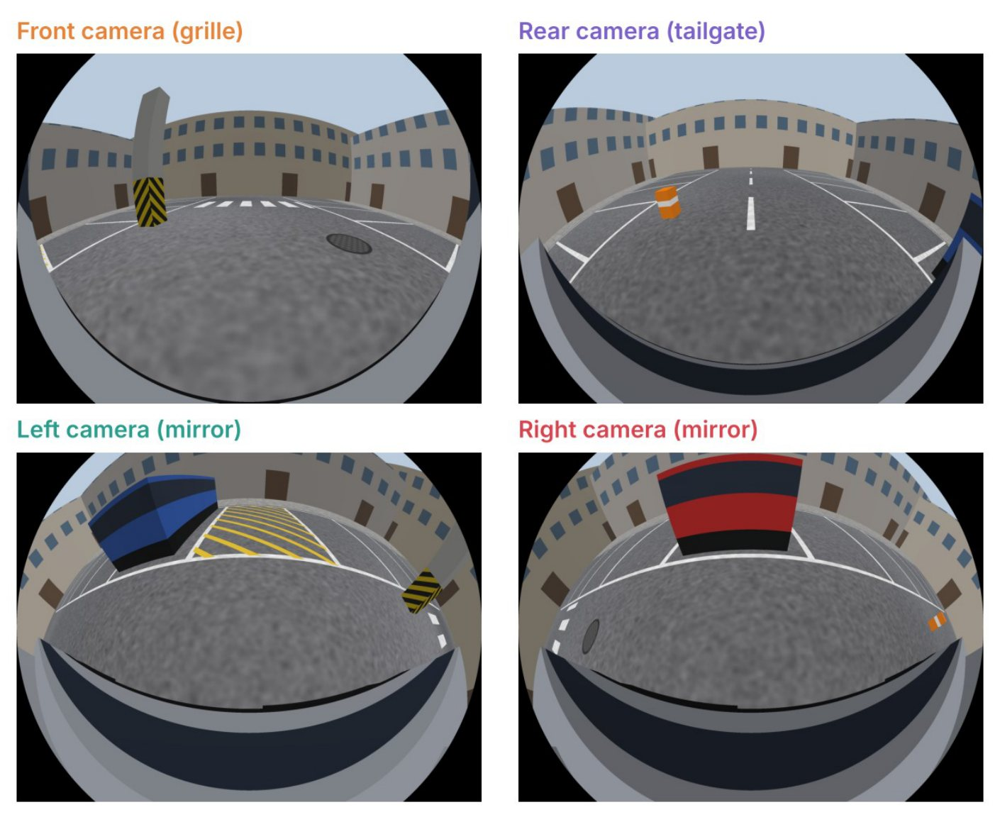
From these four images the system produces several very different products:
- Views for the driver — a single-camera rear view with guidelines, a top ("bird's-eye") view of the car and its surroundings, a 3D "bowl" view from a freely movable virtual camera, kerb views, cross-traffic panoramas.
- Measurements for algorithms — parking-slot positions, distances to obstacles, free-space boundaries, objects for automatic emergency braking at low speed, lane and kerb positions for automated parking.
- Self-monitoring — is a camera blocked, misaligned, or has the calibration drifted?
All of them need the same thing: a reliable mapping between a pixel and a direction in the vehicle's coordinate system, and — with an assumption about the world, usually "the ground is flat" — a mapping between a pixel and a point in metres.
1.2The chain from photon to metre
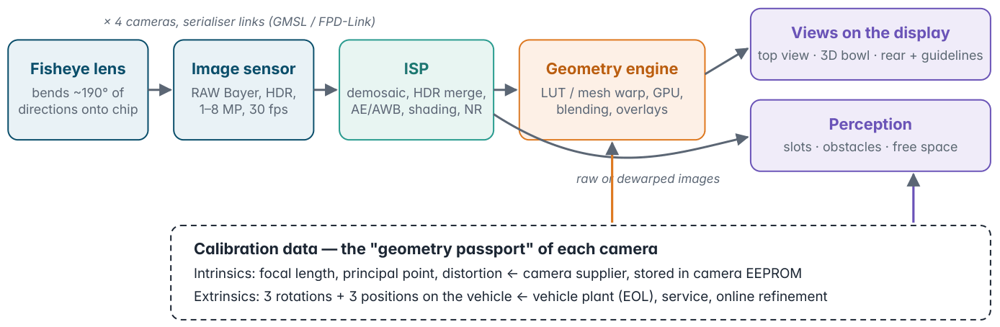
It helps to separate three ingredients that are often mixed up in discussions:
- The model — a mathematical formula describing how a direction in space becomes a pixel. For a fisheye this includes how the lens "compresses" wide angles (Chapter 4). The model is chosen once, at design time.
- The parameters — the numbers that plug into the model for this particular camera on this particular car: its focal length, the exact centre of its image, its distortion coefficients, and its position and orientation on the vehicle. Finding them is calibration (Chapters 5 and 6).
- The runtime — the code and hardware that apply model plus parameters to every frame, 30 or 60 times per second, usually through a precomputed lookup table (Chapters 7 and 9).
A bug or weakness can sit in any of the three. A perfect model with wrong parameters gives a broken top view; perfect parameters with a slightly different model (for example, angles in degrees where the code expects radians) give the same broken result. Knowing which of the three you are discussing makes conversations with suppliers and customers much faster.
1.3Intrinsics and extrinsics in one picture
Intrinsic parameters describe the camera on its own: how it maps a direction relative to the camera into a pixel. They are fixed by the lens and the way it is glued to the sensor, so they can be measured once at the camera supplier. Extrinsic parameters describe where the camera sits on the car: three translations (x, y, z in metres) and three rotations (yaw, pitch, roll). They depend on the bumper, the tailgate, the mirror housing and the assembly tolerances of the vehicle, so they must be measured on the finished car.
Without intrinsics you cannot even say which direction a pixel looks at. Without extrinsics you know the direction relative to the camera, but not relative to the car — so you cannot draw a guideline, stitch two cameras together, or tell whether an obstacle is 30 cm or 60 cm from the bumper.
"Calibration gives each camera a passport: the intrinsics say how it sees, the extrinsics say where it stands. Every view and every distance measurement in the system is computed from that passport."
1.4The single assumption behind most views
A single camera cannot measure depth: every point along a viewing ray produces the same pixel. To get metres out of pixels we need one more piece of information. Surround-view systems almost always use the simplest possible one: "what I see lies on a flat ground plane at z = 0." With that assumption, every pixel below the horizon corresponds to exactly one point on the ground, and the image can be "unprojected" into a map. This is what makes top views and ground distances possible — and it is also why everything that is not flat ground (a pillar, another car, a pedestrian) looks stretched and distorted in those views. We will meet this trade-off again and again; Figure 23 in Chapter 7 shows it most clearly.
Most of the "strange artefacts" customers report in top views — cars that look like long smears, poles that seem to lie on the ground, objects that vanish at the seams — are not bugs. They are the visible consequence of the flat-ground assumption. Explaining that early saves a lot of escalation meetings; reducing it is what 3D bowl views, adaptive bowls and depth-aware rendering are for.
2Coordinate systems and projective geometry
Projective geometry is the mathematics of "how 3D becomes 2D". Five ideas carry almost everything in automotive camera work: coordinate frames, rigid transforms, the pinhole model, homographies for flat surfaces, and vanishing points. This chapter introduces them with the minimum of algebra.
2.1Coordinate frames — and why half of all integration bugs live here
A point in the world can be written down in several coordinate systems, and every step of the camera pipeline moves it from one to the next (Figure 3).
- Vehicle frame. Fixed to the car body. Automotive convention (ISO 8855, identical to the older DIN 70000) is x forward, y left, z up, right-handed. The origin is OEM-specific: the centre of the rear axle projected to the ground is common, the front axle or the front bumper are also used.
- Camera frame. Fixed to the camera, origin at the projection centre. Computer-vision convention (OpenCV) is x right, y down, z along the viewing direction. Note that this is a different "up" and "forward" than the vehicle frame.
- Normalised image coordinates. Unitless coordinates on an imaginary image plane one unit in front of the camera, before the lens model and the pixel grid are applied.
- Pixel coordinates \((u, v)\). Origin at the top-left corner, \(u\) to the right, \(v\) downwards, measured in pixels.
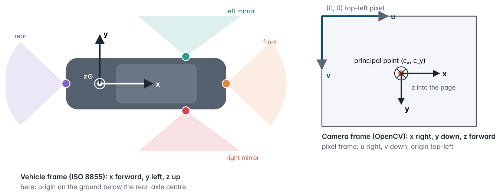
The full chain from a point on the road to a pixel is:
The first arrow is the extrinsic calibration; the remaining three are the intrinsic calibration. For fisheye lenses the projection and distortion steps are usually combined into one function (Chapter 4).
Typical mismatches between teams or suppliers: the sign of pitch (is "positive" looking down or up?), the order of Euler rotations, degrees vs radians, rotation from vehicle-to-camera vs camera-to-vehicle, translation given as camera position \(\mathbf{C}\) vs as \(\mathbf{t}\) (see below), whether pixel \((0, 0)\) is the centre or the corner of the first pixel (a 0.5 px shift), and whether the image was mirrored or rotated by the sensor readout. Each of these produces a system that "almost works". Write the conventions into the interface specification — with a numerical example — before writing code.
2.2Rigid transforms: where the camera sits
A camera's pose on the vehicle has six degrees of freedom: a position \(\mathbf{C} = (C_x, C_y, C_z)\) and an orientation, usually expressed as three angles yaw (rotation about the vertical axis, where the camera points horizontally), pitch (how far it looks down) and roll (rotation about its own viewing axis, which tilts the horizon). Transforming a vehicle point into camera coordinates is a rotation plus a translation:
Here \(R\) is a \(3 \times 3\) rotation matrix (orthonormal, determinant +1). Note the subtle point: \(\mathbf{t}\) is not the camera position — it is the position of the vehicle origin expressed in camera coordinates. Mixing the two is a classic bug. The rotation is usually built from the three angles, for example \(R^{\top} = R_z(\text{yaw})\,R_y(\text{pitch})\,R_x(\text{roll})\,R_0\), where \(R_0\) is the fixed re-labelling of axes from vehicle to camera convention (camera \(z\) = vehicle \(x\), camera \(x\) = −vehicle \(y\), camera \(y\) = −vehicle \(z\)). The order matters: rotating 30° in yaw and then 60° in pitch is not the same as the reverse.
Euler angles are intuitive and are what appears in specifications and diagnostic readouts, but they have a singularity ("gimbal lock") when the middle angle reaches ±90°. A mirror camera pitched 62° down is fine; a camera looking straight down would not be. Inside algorithms, use rotation matrices, rotation vectors (axis × angle, as in OpenCV's Rodrigues form) or quaternions, and convert to angles only for display.
2.3The pinhole model: similar triangles
The ideal camera is a pinhole: every ray passes through one point, the projection centre. Placing an imaginary image plane at distance \(f\) in front of that centre, a point at camera coordinates \((X, Y, Z)\) lands where the straight line to the centre crosses the plane (Figure 4). Similar triangles give
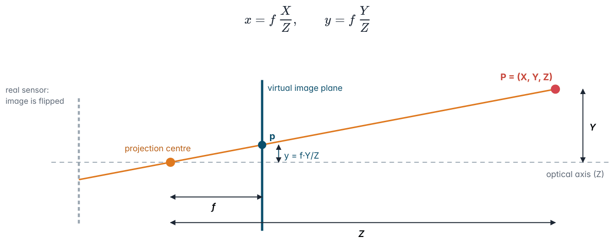
To get pixels, we scale by the pixel size and shift to the top-left origin. All of this is collected in the camera matrix \(K\):
\(F\) is the physical focal length (mm) and \(p_x\) the pixel pitch, so \(f_x\) is the focal length in pixels: a 1.0 mm lens on a sensor with 3.0 µm pixels gives \(f \approx 333\) px. \((c_x, c_y)\) is the principal point, where the optical axis hits the sensor. It is close to, but never exactly at, the image centre, because the lens cannot be glued perfectly centred over the chip. The skew \(s\) is zero for all practical sensors, and \(f_x = f_y\) for square pixels.
\(K\) belongs to a specific pixel grid. If the ISP crops a window starting at \((x_0, y_0)\) and then scales by \(s\), the intrinsics change to \(c_x' = (c_x - x_0)\,s\), \(c_y' = (c_y - y_0)\,s\), \(f' = f\,s\) (distortion coefficients defined on angles or on normalised coordinates stay the same). Binning, a changed sensor readout mode, a vertical flip or a different output resolution all require the same adaptation. Many "calibration is suddenly off by a constant" issues come from an ISP configuration change that nobody propagated into the geometry pipeline.
2.4Homogeneous coordinates: why projective geometry uses an extra 1
The division by \(Z\) makes projection non-linear, which is awkward for algebra. The trick of projective geometry is to add one extra coordinate and agree that vectors which differ only by a scale factor describe the same point: \((u, v, 1) \sim (2u, 2v, 2) \sim (\lambda u, \lambda v, \lambda)\). Then the whole pinhole camera becomes a single matrix multiplication:
The \(3 \times 4\) projection matrix \(P\) contains all intrinsics and extrinsics of a pinhole camera. Homogeneous coordinates bring two more gifts. First, points at infinity become ordinary vectors with a last coordinate of zero — \((d_x, d_y, d_z, 0)\) is "infinitely far away in direction \(\mathbf{d}\)", which is exactly what a vanishing point is. Second, lines in the image are also 3-vectors \(\mathbf{l}\), and a point lies on a line when \(\mathbf{l}^{\top}\mathbf{x} = 0\); the line through two points is their cross product. Many geometric computations reduce to one-line vector operations.
2.5Homographies: the mathematics of flat things
Most of what a surround-view system cares about lies on one plane: the road. For points on the ground, \(Z_v = 0\), so the third column of the rotation drops out and the projection becomes a \(3 \times 3\) matrix:
\(H\) is a homography: an invertible mapping between two planes that keeps straight lines straight but does not keep parallel lines parallel or lengths equal (Figure 5). It has 8 degrees of freedom (9 entries minus overall scale), so four point correspondences — for example the four corners of a known target on the floor — determine it completely. Its inverse \(H^{-1}\) takes the camera image back to the ground plane. That operation is called inverse perspective mapping (IPM), and it is the mathematical core of every top view.
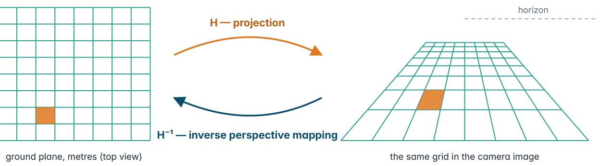
Homographies explain four things you will meet constantly: why a top view is a cheap "image warp" rather than a 3D reconstruction; why four or more floor targets are enough to calibrate a camera's pose; why parallel parking lines in a top view are a sensitive indicator of calibration quality; and why anything that sticks out of the ground plane is drawn wrongly in a top view.
2.6Vanishing points and the horizon
All lines with the same 3D direction \(\mathbf{d}\) meet in the image at one vanishing point, the image of the point at infinity in that direction:
It depends only on the rotation, not on where the camera is. All directions parallel to the ground plane produce vanishing points that lie on one line, the horizon \(\mathbf{l}_{\infty} \sim K^{-\top} R\,\mathbf{n}\), with \(\mathbf{n}\) the ground normal. Its height in the image encodes the camera pitch and its slope encodes the roll (Figure 6). For a pinhole camera with zero roll, the horizon row \(v_h\) gives the downward pitch directly: \(\text{pitch} = \arctan\big((c_y - v_h)/f\big)\) — ten pixels of horizon error at \(f = 1000\) px means 0.57° of pitch.
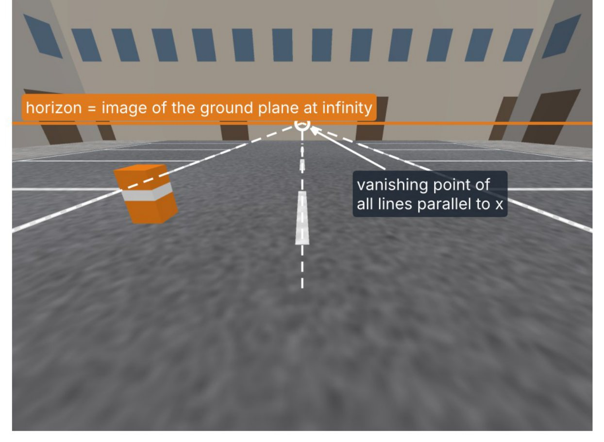
2.7Depth, and the flat-world assumption
One image cannot tell how far away something is. There are four ways around this, and every automotive system uses at least one:
- Assume a surface. If the point lies on the flat ground, the ray from the camera intersects the plane \(z = 0\) at exactly one place. For a pinhole camera at height \(h\) pitched down by \(\beta\), a pixel in row \(v\) looks down at angle \(\alpha = \beta + \arctan\big((v - c_y)/f\big)\) and the ground distance is
\[ d = \frac{h}{\tan\alpha}. \]This is how top views, guidelines and the distance of a detected object's ground-contact point are computed.
- Use motion. As the car moves, the same point is seen from different positions; triangulating gives depth (structure from motion). This needs accurate ego-motion, typically from wheel odometry.
- Use a second camera. Stereo, or two surround cameras in their overlap region.
- Learn it. Neural networks predict depth from appearance and context; they still need correct intrinsics to turn depth into 3D points.
Because the ground distance depends on a ratio of small angles, it is very sensitive to calibration error for far points. Differentiating the formula above gives the rule of thumb
so the error grows with the square of the distance. Chapter 6 puts numbers on this.
When two calibrated cameras see the same point, the point's image in camera B must lie on a specific curve (for pinhole cameras: a line, the epipolar line) determined by the point's position in camera A and the relative pose of the cameras. In surround view this constraint is used in the overlap zones to check whether two cameras still agree with each other, and in some online calibration methods to correct their relative pose without any target.
3Lenses and distortion
A real lens is not a pinhole. It is a stack of curved glass and plastic elements designed to collect enough light, focus it sharply and cover the required field of view at an acceptable cost. Straight lines bending into curves is one consequence. This chapter explains what distortion is, how it is modelled for ordinary lenses, where that model breaks down — and which other optical effects end up on the ISP's desk.
3.1Distortion is a geometric error, not a loss of image quality
Distortion means a point is imaged at the wrong place compared with an ideal pinhole camera — not that it is blurred. The information is still there; it is just moved. That is why distortion can be corrected perfectly in software once it is known, whereas blur (limited sharpness, measured as MTF) cannot. It is also why lens designers are often willing to accept large distortion: it frees degrees of freedom in the design to make the lens sharper, smaller, cheaper or wider.
For almost all lenses the dominant effect is radial: points are moved towards or away from the image centre, by an amount that depends only on their distance from it. Two simple shapes result (Figure 7): barrel distortion squeezes the periphery inwards (typical of wide-angle lenses, and in extreme form of every fisheye), pincushion distortion stretches it outwards (typical of telephoto lenses). Real lenses can mix both, giving the wavy "moustache" shape.
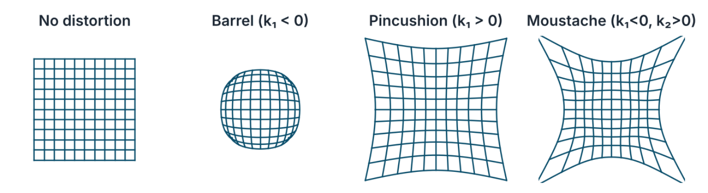
3.2The classic model: Brown–Conrady
For normal and moderately wide lenses the standard description, used by OpenCV, MATLAB and most calibration tools, is the Brown–Conrady model. It starts from the ideal pinhole coordinates \(x_n = X/Z\), \(y_n = Y/Z\) and their radius \(r^2 = x_n^2 + y_n^2\), and moves each point by a polynomial:
followed by \(u = f_x x_d + c_x\), \(v = f_y y_d + c_y\). The \(k_i\) describe the radial part: negative \(k_1\) gives barrel, positive gives pincushion. The \(p_i\) describe tangential (decentring) distortion, which appears when lens elements are slightly shifted or tilted against each other or the sensor is not perfectly perpendicular to the optical axis. In well-made automotive cameras the tangential terms are small; many fisheye models do not include them at all and absorb the effect elsewhere.
The model maps an ideal point to a distorted pixel. The opposite direction — "which ray does this pixel see?" — has no closed-form solution for a polynomial and is computed iteratively (a few Newton steps) or tabulated. Good view-synthesis pipelines are therefore written backwards: for every output pixel they compute the ray it should show and then apply the easy forward model to find the source pixel in the camera image. Chapter 7 builds on this.
3.3How lens vendors describe distortion
Lens datasheets usually give distortion as a percentage at a field angle — for instance "−35 % at 60°" — meaning the real image height is 35 % smaller than an ideal pinhole would produce at that angle:
For fisheye lenses this number is not very useful, because the ideal pinhole image height \(f \tan\theta\) goes to infinity at 90°. Fisheye datasheets therefore provide a table of real image height versus field angle (often called the "f-θ" or "image height" table, straight from the optical design software) and sometimes a distortion relative to the ideal equidistant projection \(r = f\theta\) ("F-theta distortion"). That table is the nominal lens model; each produced unit deviates slightly from it, which is what per-unit intrinsic calibration measures.
The distortion curve is mostly fixed by the optical design and varies little between units. What varies more is the principal point, because the lens barrel is aligned to the sensor with a tolerance of some tens of micrometres — easily 5–20 pixels at 3 µm pixel pitch — and, to a lesser extent, the focal length (focus position, element spacing). Active alignment during camera assembly reduces these errors but does not remove them. This is why per-unit intrinsic calibration is standard for surround-view cameras and why the principal point is the parameter most worth checking first when a camera looks "slightly off".
3.4Where the classic model breaks: wide angles
Brown–Conrady is a correction on top of the pinhole projection, which maps a ray at angle \(\theta\) from the axis to radius \(r = \tan\theta\). As \(\theta\) approaches 90°, \(\tan\theta\) grows without bound; at 90° and beyond it is undefined. A fisheye lens, however, images rays at 90° and even beyond at a finite radius. Trying to describe that with "pinhole plus a polynomial in \(r\)" requires huge, unstable coefficients and still fails near the edge. OpenCV's rational model (extra \(k_4\)–\(k_6\) in a denominator) stretches the usable range somewhat, but for fields of view much beyond ~120–140° a model built on the angle \(\theta\) itself is the right tool. That is the subject of Chapter 4.
3.5Other optical effects: what lands on the ISP's desk
Geometric calibration deals with where light lands. Several other lens properties affect how much and what colour of light lands there, and they are strongest exactly where fisheye lenses are most extreme: at the edge of the image circle.
| Effect | What happens | Who handles it, and how |
|---|---|---|
| Relative illumination (vignetting) | The image gets darker towards the edge — in fisheye lenses often to well under half of the centre brightness. The colour balance can also shift towards the edge (colour shading). | ISP lens shading correction (LSC): a gain grid per colour channel, calibrated per lens type or per unit, centred on the optical centre. Too much gain at the edge amplifies noise. |
| Lateral chromatic aberration | Magnification differs slightly between red, green and blue, so colour fringes appear at edges and grow towards the periphery. Effectively, each colour has its own distortion curve. | ISP LCA block (per-channel radial scaling), or a per-channel warp in the dewarp stage. Geometric calibration is normally done on green or luma. |
| Sharpness fall-off (MTF), field curvature | The periphery is softer than the centre. Fisheye lenses also squeeze many degrees into few pixels at the edge. | Cannot be undone by geometry. Affects corner detection accuracy, perception range at the edge, and how sharp a dewarped view can be. |
| Temperature | Over the automotive temperature range, plastic elements and adhesives expand: focus, focal length and principal point drift slightly. | Athermal optical and mechanical design; validation of calibration over temperature; for high-precision perception, temperature-dependent models. |
| Flare, ghosts, dirt, water | Low sun creates veiling glare and ghost images; dirt and water drops block or blur parts of the image. | Lens coatings and hood design; ISP and perception-level blockage detection; washer systems. |
"Distortion is not a quality problem — it is the price of seeing 190 degrees with one small lens. As long as we know it precisely, we can remove it perfectly in software. What we cannot remove is blur, noise and dirt, and those are strongest at the edges of a fisheye image."
4Fisheye lenses: seeing 190° with one camera
A fisheye lens gives up on keeping straight lines straight in exchange for something more valuable for a car: a field of view of 180° and more, with the image detail spread evenly over all angles. This chapter explains how that works, how fisheye projection is described mathematically, and which camera models are used in practice.
4.1Why surround view needs fisheye lenses
Four cameras must together see the full circle around the vehicle and the ground right next to the bumpers, with enough overlap between neighbours to stitch the images. A camera mounted 0.6–1.0 m high on a bumper or mirror and looking outward needs to see from almost straight down to above the horizon, and from one side of the car to the other. That is a field of view of roughly 180° or more in both the horizontal and the downward direction — impossible for a rectilinear (pinhole-like) lens, as Figure 8 shows.
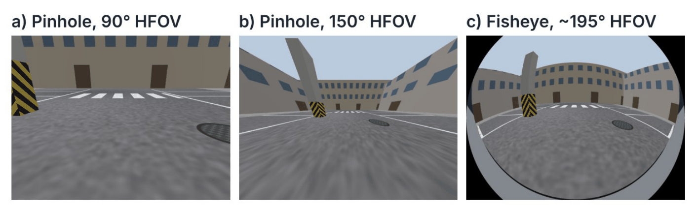
The reason lies in the projection function. A pinhole maps a ray arriving at angle \(\theta\) from the optical axis to radius \(r = f\tan\theta\) on the sensor. Because \(\tan 90^\circ = \infty\), a ray at 90° would land infinitely far away; long before that, the edges of the image consume enormous sensor area. A fisheye lens is designed to bend the rays so that the radius grows roughly in proportion to the angle, \(r \approx f\theta\) — a ray at 90° then lands at a finite radius, and so does a ray at 95° (Figure 9).
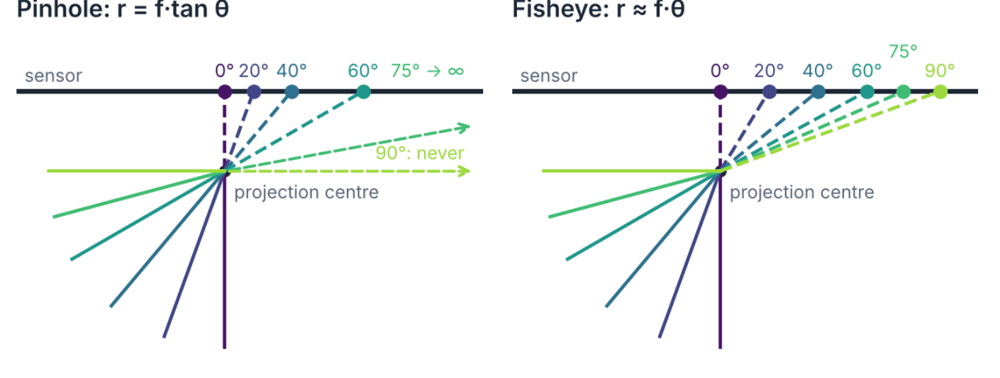
4.2Projection functions
Classical optics knows several ideal "fisheye projections", each preserving a different property:
| Projection | Formula | What it preserves | Comment |
|---|---|---|---|
| Perspective (pinhole) | \(r = f\tan\theta\) | Straight lines | Unusable beyond ~120–140°. |
| Stereographic | \(r = 2f\tan(\theta/2)\) | Local shapes (conformal) | Objects at the edge look less squeezed; used in some "natural looking" wide lenses. |
| Equidistant | \(r = f\theta\) | Angles (uniform degrees per pixel) | The reference for most automotive fisheyes; "f-θ lens". |
| Equisolid | \(r = 2f\sin(\theta/2)\) | Area (solid angle) | Common in photographic fisheyes. |
| Orthographic | \(r = f\sin\theta\) | — | Strong compression at the edge; limited to 180°. |
No real lens follows any of these exactly. Real automotive fisheyes are usually somewhere between equidistant and stereographic, optimised for sharpness and pixel distribution. That is why calibration does not just pick one formula but fits a flexible function \(r(\theta)\) to the actual lens.
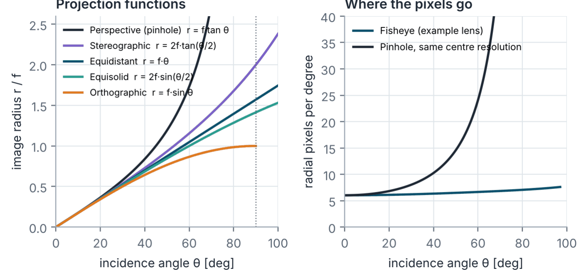
4.3Where the pixels go — and why it matters for perception
The right panel of Figure 10 is the key to understanding fisheye resolution. A fisheye spreads its pixels almost evenly over angles, so it is equally (and modestly) sharp everywhere. Our example camera, with \(f = 345\) px, gives about 6 pixels per degree. A child-sized object 0.3 m wide at 10 m distance covers 1.7° — about 10 pixels. That is enough to see it on a display but marginal for a reliable detector, which is why the useful range of surround-view perception is typically measured in metres rather than tens of metres, and why newer surround cameras move from ~1–2 MP to 3 MP and beyond.
Resolution in a fisheye camera is best expressed in pixels per degree, not megapixels. Doubling the megapixels gives only about 1.4× more pixels per degree. When a requirement says "detect a pedestrian at X m", the first sanity check is: how many pixels will that pedestrian cover at the relevant field angle, after the lens, the ISP and any dewarping?
4.4Image circle, mask and "seeing behind itself"
The fisheye lens forms a round image. If the whole circle fits on the sensor ("circular fisheye") the corners of the chip are wasted. Automotive cameras usually make the circle wider than the sensor is tall: the full horizontal field (~190–200°) fits on the long side, while the top and bottom of the circle are cut off (our simulated camera sees about 195° × 150°). The black corners in Figure 1 are outside the image circle.
A field of view above 180° means the camera sees slightly behind the plane of its own front surface. On a car this means the camera always sees parts of the vehicle: the bumper, the flank, the mirror housing. Those pixels must be masked out — they are not road. A per-camera vehicle mask is part of the calibration data set, and it changes between vehicle variants (different bumpers, towbars, mirror shapes). Figure 10a shows both effects in a real fisheye frame.
- Auto-exposure statistics should ignore the black corners and the vehicle body, and weight the ground near the car more than the sky; otherwise a bright sky darkens exactly the region the driver needs.
- Lens shading correction must be centred on the optical centre (≈ principal point), not on the sensor centre, and must not boost the black area outside the image circle.
- Any crop, scaling or flip in the ISP changes the intrinsics (Section 2.3).
4.5Fisheye camera models
A camera model is the formula — with parameters — that maps a 3D ray in camera coordinates to a pixel ("projection") and back ("unprojection"). Several families are in use. All of them share the same idea: describe the image radius as a function of the ray's angle from the optical axis (or something equivalent), then add the principal point.
Kannala–Brandt (KB), "OpenCV fisheye"
The most widespread model. With \(\theta = \operatorname{atan2}\big(\sqrt{X^2 + Y^2},\, Z\big)\) the angle of the ray from the optical axis, the distorted angle is a polynomial in \(\theta\):
With all \(k_i = 0\) it is exactly the equidistant projection. Eight parameters \((f_x, f_y, c_x, c_y, k_1..k_4)\) describe nearly any automotive fisheye very accurately. This guide's simulations use it.
OpenCV's cv::fisheye functions compute the angle from \(X/Z\) and \(Y/Z\), so they silently fail for rays at or beyond 90° from the optical axis — precisely the part of the image that a 190° lens adds. Production code should implement the model with \(\operatorname{atan2}\), as written above. Also check whether a supplier's "KB" uses \(\theta\) in radians (standard) and whether they include the linear term in the polynomial or in \(f\).
Scaramuzza / OCamCalib polynomial
This model works in the opposite direction: it describes the ray for a pixel. For a pixel at radius \(\rho\) from the centre, the ray is \((x,\ y,\ a_0 + a_2\rho^2 + a_3\rho^3 + a_4\rho^4)\), followed by an affine \(2 \times 2\) matrix that absorbs small sensor misalignments. Unprojection (pixel → ray) is closed-form and fast; projection needs a separately fitted inverse polynomial. It is used by the OCamCalib toolbox and MATLAB's fisheye calibrator, and appears in many supplier deliverables.
Unified camera model (UCM) and its descendants
A geometric idea: first project the point onto a unit sphere around the camera, then project that sphere point with an ordinary pinhole whose centre is shifted backwards by a distance \(\xi\) (Figure 11):
\(\xi = 0\) is the pinhole; larger \(\xi\) "pulls in" the wide angles and allows fields of view above 180°. Variants add parameters for accuracy while keeping a closed-form inverse: the Extended UCM (\(\alpha, \beta\)) and the Double Sphere model (\(\xi, \alpha\); two sphere projections in a row). They are popular in visual SLAM and odometry because both directions are cheap to compute and differentiate.
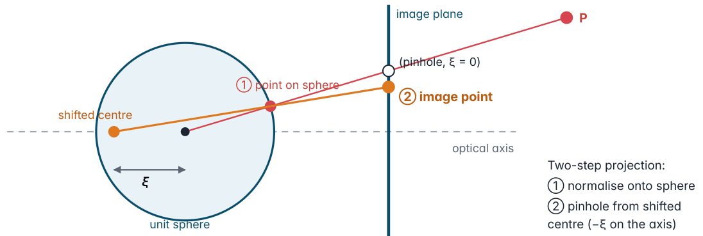
Choosing a model
| Model | Params (+ \(c_x, c_y\)) | Pixel → ray | FOV > 180° | Typical use |
|---|---|---|---|---|
| Kannala–Brandt | f (×2), k₁–k₄ | iterative (Newton) | yes (with atan2) | OpenCV ecosystem, many SVS stacks |
| Scaramuzza polynomial | a₀, a₂–a₄, affine (3) | closed form | yes | OCamCalib, MATLAB, supplier data |
| UCM / EUCM | f, ξ (or α, β) | closed form | yes | SLAM, fast geometry |
| Double Sphere | f, ξ, α | closed form | yes | SLAM, visual-inertial odometry |
| Polynomial \(r(\theta)\) | a₁–a₄ (or more) | iterative | yes | datasets (e.g. WoodScape), lens-table fits |
| Generic / spline | many | lookup | yes | highest-accuracy metrology |
In practice the model is often dictated by the camera supplier's EEPROM format or the OEM's interface specification. Converting between models is possible by sampling one and fitting the other over the whole field of view — always check the fit residual at the edge of the image circle, not just the average.
4.6Think in rays, not in pixels
The most useful mental model for working with fisheye cameras is this: a calibrated camera is a pair of functions,
plus a validity check (is this ray inside the field of view, is this pixel inside the image circle and outside the vehicle mask?). Once you have them, every algorithm — top view, bowl view, guidelines, triangulation, pose estimation — can be written in terms of rays and becomes independent of the specific lens model. Good software architecture reflects this with a single CameraModel interface behind which KB, Scaramuzza or Double Sphere implementations can be swapped.
4.7Fisheye facts worth knowing
- Radial lines stay straight. Any line passing through the principal point remains straight in every radially symmetric model. A quick visual check of calibration: lines through the image centre should look straight in the raw image.
- Straight lines become arcs, approximately circles for equidistant-like lenses. The horizon becomes a curve unless it passes through the image centre — in mirror cameras looking steeply down it is a strong arc near the top of the image.
- Objects at the edge look smaller and further away than they are, because the periphery is compressed. Drivers need to be told that the raw fisheye image underestimates proximity at the sides.
- Rotation changes appearance. The same pedestrian looks different in the image centre and at the edge (squeezed, tilted). Neural networks for fisheye images must be trained on fisheye data covering all image regions (Chapter 8).
- Distance on the sensor ≈ angle. For an equidistant-like lens, the pixel distance from the principal point divided by \(f\) is roughly the angle in radians. With \(f = 345\) px, 600 px from the centre is about 100°.
5Camera calibration fundamentals
Calibration means finding the numbers that make the camera model agree with reality. In principle it is simple: show the camera something whose geometry you know exactly, measure where it appears in the image, and adjust the parameters until model and measurement match. In practice the quality depends far more on how the data is collected than on the optimiser.
5.1What is estimated, and how "agreement" is measured
For intrinsic calibration with a planar target, the unknowns are the intrinsic parameters \(\mathbf{k}\) (focal length, principal point, distortion coefficients) and the pose \((R_i, \mathbf{t}_i)\) of the target in every image \(i\) — the target poses are nuisance parameters, but they must be estimated too. The data are the detected image positions \(\mathbf{u}_{ij}\) of the target's known points \(\mathbf{X}_j\) (for example checkerboard corners). Calibration minimises the reprojection error, the distance between where the model predicts each point and where it was actually detected:
This is a non-linear least-squares problem, solved with the Levenberg–Marquardt or a trust-region method. Because it adjusts the camera and all target poses jointly, it is a small instance of bundle adjustment, the same machinery used in photogrammetry and SLAM. The result is usually summarised as the RMS reprojection error in pixels.
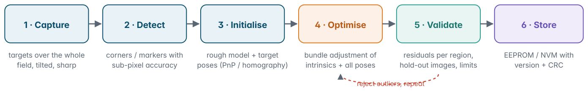
5.2Targets
The target defines the "truth" the camera is fitted to, so its accuracy is the floor of everything that follows.
- Checkerboards are the classic choice: their corners are saddle points that can be located to a few hundredths of a pixel in sharp images, and they are robust to blur and lighting. Their weakness: most detectors need the complete board in view, which is hard at the edge of a fisheye image.
- ChArUco boards (checkerboard with ArUco markers in the white squares) and AprilTag grids give every corner a unique identity, so partially visible boards still deliver correct correspondences — very valuable for covering the periphery of fisheye images.
- Circle or dot grids can be detected very precisely, but under strong perspective or distortion the centre of the imaged ellipse is not the image of the circle's centre. The bias is small but systematic and grows towards the edge of a fisheye image.
The target must be flat and its printed geometry accurate: a board that bows by a millimetre or a print scaled by 0.3 % produces a camera model that is wrong by exactly that much — and the low reprojection error will not reveal it, because the optimiser fits the wrong target perfectly. Figure 12a shows corner detection on real images.
samples/data/left01.jpg from OpenCV, c) the input image of the omnidirectional calibration tutorial in opencv_contrib; both Apache License 2.0. Corner detection (findChessboardCorners + cornerSubPix) and labels: ours.5.3Good data beats a clever optimiser
Three properties of the image set matter most:
- Coverage of the whole image. A distortion polynomial is only reliable where it was fitted. Points must reach the very edge of the image circle, where distortion is largest and where top views and bowl walls take their data from.
- Variety of target poses. Views of a board parallel to the sensor cannot separate focal length from distance (a board twice as far looks like a lens with half the focal length). Tilting the board by 30–50° in different directions breaks this ambiguity.
- Image quality. Sharp focus, no motion blur, no saturation, even illumination. Fisheye peripheries are softer and darker, so corner accuracy drops exactly where coverage is most needed.
5.4A calibration experiment: why RMS alone can lie
To show what coverage means, we ran a complete calibration twice on the simulated fisheye camera, using our own bundle adjustment of the Kannala–Brandt model. Both runs used 30 images of an 11 × 8 corner board with 0.15 px detection noise; Figure 13 shows examples. In run (a) the boards were spread across the whole field of view; in run (b) they were kept within ~22° of the optical axis. We then compared each estimated model with the true lens at every pixel of the image (Figure 14).
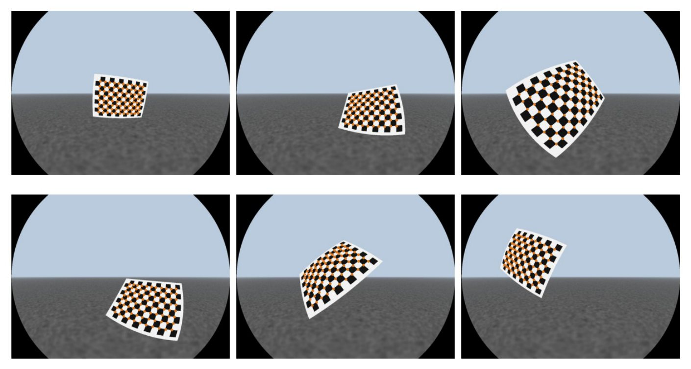
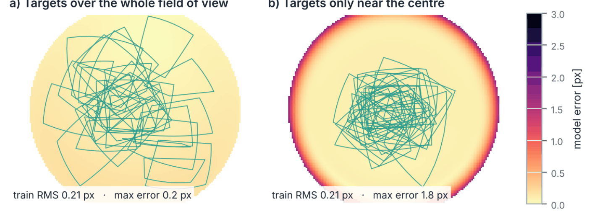
| Parameter | True | (a) whole field | (b) centre only |
|---|---|---|---|
| Focal length \(f\) [px] | 345.00 | 345.00 | 344.92 |
| Principal point \(c_x, c_y\) [px] | 640.70, 479.30 | 640.71, 479.22 | 640.70, 479.38 |
| \(k_1,\ k_2,\ k_3\) | 0.0400, −0.0060, 0.0010 | 0.0395, −0.0056, 0.0008 | 0.0414, −0.0096, 0.0046 |
| Training RMS [px] | — | 0.21 | 0.21 |
| Max. model error, θ < 60° [px] | — | 0.18 | 0.10 |
| Max. model error, whole field [px] | — | 0.20 | 1.84 |
The RMS reprojection error only measures how well the model fits the points you gave it. It says nothing about regions without points. A calibration acceptance criterion should therefore include coverage (for example, minimum corner density in each ring of field angle) and validation on independent data, not just "RMS below X pixels". Note also how the distortion coefficients of run (b) look plausible and the focal length is nearly right: the problem is invisible in the parameter list.
5.5Parameters that hide behind each other
Some parameters have similar effects on the image, so the data can trade one against the other. Knowing these correlations helps when results look odd:
- Focal length ↔ first distortion coefficient. Both scale the image radius; only data at large angles separates them.
- Focal length ↔ target distance. Separated only by tilted views.
- Principal point ↔ camera rotation. Shifting \(c_x\) by a few pixels looks almost like a small yaw of the camera. When intrinsics are fixed at the camera supplier and extrinsics are calibrated later on the vehicle, a principal-point error is partly absorbed into the extrinsic angles. The pair then works well near the EOL targets but not everywhere — a "compensating error" that is hard to diagnose.
5.6Intrinsic calibration in camera production
For surround-view cameras, intrinsics are usually calibrated per unit at the end of the camera supplier's production line. Hand-held board waving does not fit a line with a cycle time of seconds, so production stations use fixed multi-target fixtures: the camera sits in a "calibration box" or dome whose inner surfaces carry many targets at precisely known positions, covering the whole field of view in one or a few shots. Collimator-based stations, which present targets at optical infinity, are an alternative. The result, together with quality metrics, the model version and a checksum, is written to the camera's EEPROM; the vehicle ECU reads it at start-up over the serialiser link's control channel.
The alternative — one nominal intrinsic set per camera type from the lens design — avoids the station but accepts unit-to-unit spread, mainly in the principal point (Section 3.3). Whether that is acceptable is a system-level decision driven by the required top-view seam quality and perception accuracy.
Specify: the model and its exact equations (with a numerical test vector: "this ray must give this pixel"), units, coordinate conventions, the image resolution and readout mode the parameters refer to, the EEPROM layout with version field and CRC, the quality metrics stored alongside, and what the ECU must do if the data is missing or corrupt (fall back to nominal and set a diagnostic trouble code, or disable the function).
5.7What "good" looks like
| Metric | Typical target (order of magnitude) | Comment |
|---|---|---|
| RMS reprojection error | ≈ 0.1–0.3 px for target-based lab/EOL intrinsics | Should match the expected detection noise; much lower means overfitting or too few points. |
| Maximum residual | below ~1 px | Large single residuals point to bad detections or a damaged target. |
| Coverage | points in every field-angle ring up to the edge of the image circle | The hidden failure mode of Figure 14. |
| Parameter uncertainty | standard deviation from the optimiser's covariance | Large uncertainty in one parameter reveals a weak data set. |
| Repeatability | re-calibrating the same unit gives the same parameters within tolerance | The most honest test of a production station. |
6Calibration across the vehicle lifecycle
Intrinsics belong to the camera; extrinsics belong to the car. A camera can be perfectly calibrated at its supplier and still produce a broken top view, because the bumper it is mounted in sits a degree differently on this particular vehicle. This chapter follows calibration through the life of a car: from the factory floor to the workshop and the road.
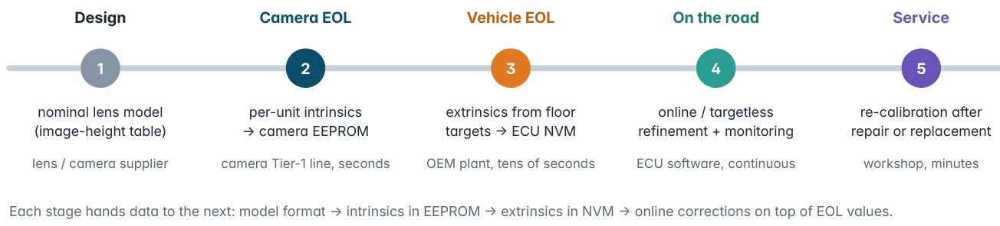
6.1Why every car needs its own extrinsics
A camera's pose on the car is the end of a long tolerance chain: camera housing in a bracket, bracket in a plastic bumper fascia or tailgate trim, fascia on the body, the body on its suspension. Each link contributes millimetres and fractions of a degree; together the variation reaches a degree or more. Mirror cameras add the mirror fold mechanism, which must return to the same position after every fold. A degree sounds small, but projective geometry amplifies it:
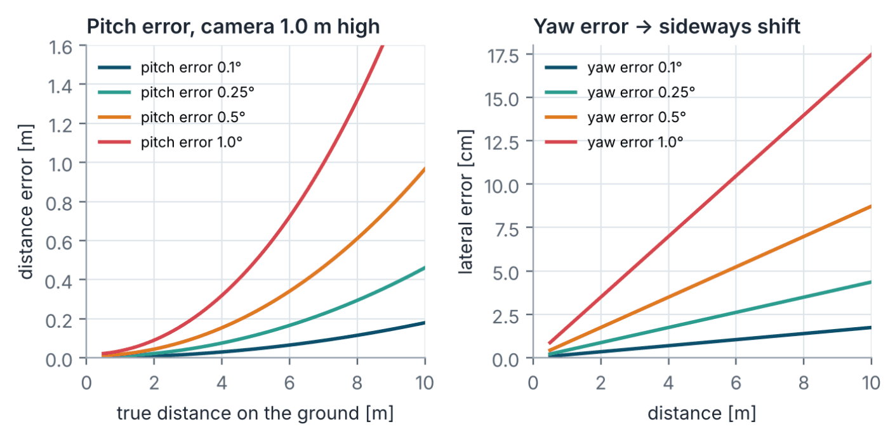
| Ground distance | pitch error 0.25° | 0.5° | 1.0° |
|---|---|---|---|
| 3 m | 4 cm | 9 cm | 18 cm |
| 5 m | 12 cm | 24 cm | 50 cm |
| 8 m | 29 cm | 61 cm | 1.3 m |
For a top view the consequence is visible immediately: two cameras that disagree about where a parking line lies draw it twice, or break it at the seam (Figure 17). For perception, the same error moves a detected obstacle or parking slot by the amounts in the table.
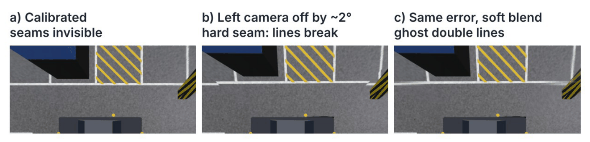
6.2Extrinsic calibration at the vehicle end of line
At the end of the assembly line every car drives into a calibration station: a flat floor area with targets — checkerboard mats, dot patterns or coded markers — at precisely surveyed positions around the vehicle (Figure 18). The procedure is typically:
- Position the vehicle in a defined pose relative to the targets, using wheel guides, centring rollers or an alignment fixture, and bring it into a defined state: doors and tailgate closed, mirrors unfolded, defined load and tyre pressure.
- Start the routine through the diagnostic interface (typically a UDS RoutineControl request from the plant tester).
- Detect the targets in each camera image and convert the detected pixels into rays using the camera's own intrinsics from its EEPROM.
- Solve for the pose of each camera from the known 3D target points and their observed rays — the Perspective-n-Point (PnP) problem, refined by minimising the reprojection error. Optionally, refine all cameras jointly using targets seen by two cameras.
- Check plausibility against the nominal pose and its tolerance window. A result far outside means a mounting defect, a wrong camera variant, a dirty lens or a mis-positioned car — not something to store.
- Store and report: write the extrinsics to the ECU's non-volatile memory, set the "calibrated" status, return result codes to the tester (readable with ReadDataByIdentifier). Until this succeeds, the ECU typically sets a diagnostic trouble code and limits the functions.
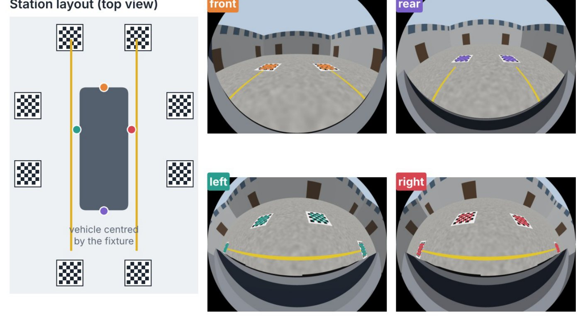
We simulated this procedure with deliberately "mis-mounted" cameras (errors of 0.4–1.2° against nominal) and 0.3 px corner noise. PnP recovered the poses as follows:
| Camera | Corners | True yaw / pitch / roll [°] | Estimated [°] | Position error [mm] |
|---|---|---|---|---|
| Front | 50 | 0.60 / 18.90 / −0.40 | 0.71 / 18.96 / −0.36 | 1, −5, 1 |
| Rear | 50 | 179.20 / 31.20 / 0.50 | 179.30 / 31.19 / 0.53 | −1, 5, −1 |
| Left | 100 | 91.10 / 60.80 / 0.90 | 91.08 / 60.82 / 0.89 | −1, 1, 0 |
| Right | 100 | −90.70 / 62.90 / −1.20 | −90.69 / 62.97 / −1.18 | 0, −2, 1 |
Two lessons hide in this table. First, with good intrinsics and clean detections the pose estimate is accurate to a few hundredths of a degree. Second, the front and rear cameras, which see only two mats in a narrow area, show a larger yaw error (~0.1°) coupled with a sideways position error of ~5 mm: a small rotation and a small shift explain the same observations. Spreading targets across the field of view decouples them.
In a real plant the dominant errors are usually not detection noise but how well the car's pose in the station is known. The targets are surveyed in station coordinates, but the extrinsics must be expressed in vehicle coordinates. If the car stands 0.3° rotated in the station, every camera inherits that 0.3°. Uneven floors, worn target mats, ride-height differences and the vehicle's load state add to it. Good stations therefore either constrain the vehicle tightly, measure its actual pose (for example from the wheel positions and thrust axis, as ADAS alignment stands do), or use methods that calibrate the cameras relative to each other and to the vehicle's own axes.
"Each car is calibrated individually in the plant in under a minute. The system measures exactly how each camera is mounted on this car, checks the result against the expected tolerances, and stores it. After that, software on the vehicle keeps checking and fine-tuning the calibration while you drive."
6.3Service: after the car leaves the plant
Any repair that touches a camera or its mounting invalidates the stored extrinsics: replacing a camera, a mirror or mirror glass housing, a bumper or tailgate trim, body repair after a parking bump, and sometimes a wheel alignment or suspension work. Workshops recalibrate in one of two ways. Static calibration uses portable target mats placed around the car with the help of alignment tools, then runs a routine much like the EOL procedure through the manufacturer's diagnostic tester. Dynamic calibration asks the technician to drive a prescribed route under suitable conditions (road markings, speed range, lighting) while the online algorithm converges. A replacement camera also brings new intrinsics in its EEPROM; the ECU must read and accept them — a classic place for variant and version issues.
6.4Online and targetless calibration
Even a perfect EOL calibration describes the car in one state. On the road the body moves relative to the ground: a loaded boot or rear passengers lower the rear and pitch the car by a noticeable fraction of a degree or more; tyre pressure, ride-height control, mirror fold repeatability, temperature and ageing add smaller changes. The cameras are bolted to the body, so from the ground's point of view their pose changes. Online calibration estimates these changes from normal driving, without any target.
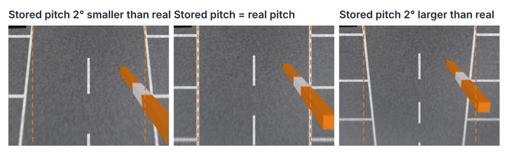
The main families of methods are:
- Ground-plane motion consistency. Track features on the road surface between frames while the car moves. Wheel odometry says how far and how the car moved; if the extrinsics are right, the ground features must move exactly that way in the top view. Deviations are solved for pitch, roll and camera height (and partly yaw).
- Vanishing points and lane markings. While driving straight along lane markings, their vanishing point gives pitch and yaw relative to the driving direction (Figure 6); parallelism of lines in the top view gives the same information (Figure 19).
- Overlap consistency between cameras. The same ground feature seen by two neighbouring cameras must land at the same ground position; aligning them geometrically (or photometrically) corrects the cameras' relative poses and removes seam steps.
- Learned methods. Networks that regress calibration corrections or detect miscalibration are emerging, usually as an additional monitor rather than the sole estimator.
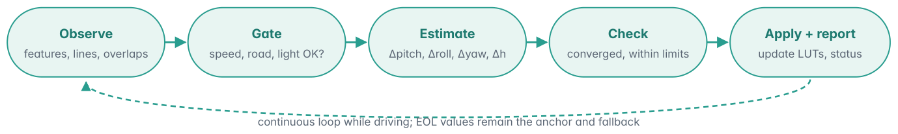
An online algorithm that converges to a wrong value is worse than none. Typical safeguards: limit corrections to a plausible range around the EOL values, require agreement between independent cues, filter slowly, freeze adaptation in unsuitable conditions (no markings, rough roads, turning), and expose a calibration-quality signal so that perception and parking functions can degrade gracefully. In SOTIF terms (ISO 21448), calibration drift and wrong convergence are triggering conditions that must be analysed and covered.
6.5Thinking in error budgets
The question a customer or system architect eventually asks is: "How accurate is the top view / the slot position at 3 m?" The honest answer is a budget that adds up independent contributions — usually as a root-sum-square of the uncorrelated parts:
| Contributor | Mechanism | Main lever |
|---|---|---|
| Intrinsic residual | model error, especially at the image periphery | coverage at camera EOL, model choice |
| EOL extrinsic error | detection noise, target survey, vehicle pose in station | station design, vehicle pose measurement |
| Load and ride height | body pitch/roll relative to the road | online calibration |
| Mechanical repeatability | mirror folding, tailgate, ageing | bracket design, online calibration |
| Non-flat ground | ramps, kerbs, cambered roads violate z = 0 | local ground estimation, conservative margins |
| Timing | unsynchronised cameras while the car moves | frame sync, timestamping (Chapter 9) |
Converting each angular contribution into metres with the sensitivity of Figure 16, at the distance that matters for the function, makes the budget concrete and shows where effort pays off.
7Views for the driver: single camera, top view, 3D bowl
Every view a surround-view system shows — a rear view with guidelines, a bird's-eye view, a 3D view from a virtual drone — is produced by the same recipe. Understanding that recipe explains both how the views are built and why each one has its characteristic artefacts.
7.1One recipe for every view
A synthetic view is defined by three things: a virtual camera (where the viewer's eye is and what lens it has), a model of the world's surface (what we assume the scene looks like in 3D), and the real cameras with their calibration. For every pixel of the output image:
- compute the ray the virtual camera sees through that pixel;
- intersect it with the assumed surface — this gives a 3D point \(\mathbf{S}\);
- project \(\mathbf{S}\) into each real camera \(k\) that can see it: \(\mathbf{u}_k = \pi_k\big(R_k(\mathbf{S} - \mathbf{C}_k)\big)\);
- sample the camera images at \(\mathbf{u}_k\) and blend.
Steps 1–3 depend only on geometry, not on image content. As long as the calibration and the virtual camera do not change, they are computed once and stored as a lookup table (LUT): for each output pixel, which camera(s), which source pixel(s), which blend weight. At runtime only step 4 is executed — a pure memory-access operation that hardware does very efficiently (Chapter 9). Working backwards from the output pixel guarantees that every output pixel gets a value: no holes, no double writes.
| View | Assumed surface | Consequence |
|---|---|---|
| Single-camera dewarp | none needed (sphere at infinity) | Virtual and real camera share the projection centre, so the result is geometrically exact for every object at every distance. Only resolution and field of view are traded. |
| Top view | flat ground, \(z = 0\) | Exact for road markings; everything above the ground is smeared outward. |
| 3D bowl view | flat floor near the car, rising walls further out | Near ground correct, distant objects look upright; objects between floor and wall are distorted. |
7.2Single-camera views
Because a virtual camera placed at the real camera's projection centre only re-samples the same bundle of rays in a different arrangement, single-camera views involve no 3D assumption at all. The designer's freedom is the virtual lens and its orientation (Figure 21, and Figure 21a for a real camera):
- Rectilinear ("normal") view — a pinhole virtual camera. Straight lines are straight, which feels natural, but beyond ~120–130° horizontal field of view the edges stretch unbearably (panel d).
- Cylindrical panorama — perspective vertically, equal angles horizontally. Vertical edges stay vertical, and 180°+ fits into a wide strip; ideal for seeing cross traffic when reversing out of a parking space (panel e).
- Tilted virtual cameras — the same real camera "looking" in another direction, for example steeply down at the towbar (hitch view) or, from a mirror camera, down along the front wheel at the kerb.
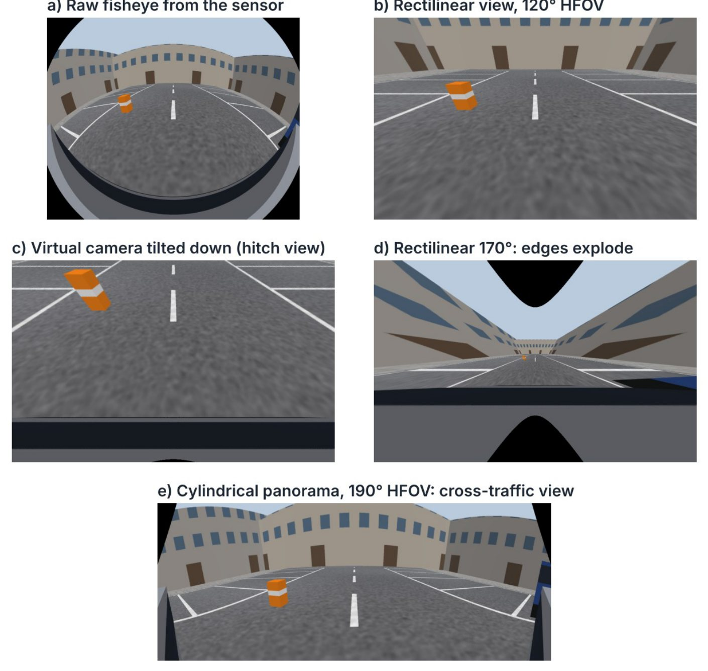
Rear-view cameras are regulated. In the US, FMVSS 111 requires a rear-view image that shows defined test objects up to 6.1 m (20 ft) behind the bumper and appears within 2.0 seconds after the driver selects reverse — which makes fast boot of the camera pipeline a requirement, not a nice-to-have. In UNECE markets, UN Regulation No. 158 requires reversing detection, by camera or sensors; camera systems must show the area from 0.3 m to 3.5 m behind the vehicle. The virtual camera of the default rear view is designed so that these zones are visible at sufficient size.
7.3Guidelines: geometry drawn on top
Parking guidelines are not part of the image; they are 3D curves on the ground, projected through the full camera model and drawn as an overlay (Figure 22). Static lines show the vehicle's width and distance markers (typically coloured zones at about 0.5 m, 1 m, 2 m and 3 m) straight behind the car. Dynamic lines follow the steering angle: from the road-wheel angle \(\delta\) and the wheelbase \(L\), the single-track (bicycle) model gives a turning radius \(R = L/\tan\delta\) about an instantaneous centre on the rear-axle line; rotating the rear bumper corners about that centre gives the swept path. A few hundred points per frame are projected with the exact model, so overlays cost almost nothing to compute.
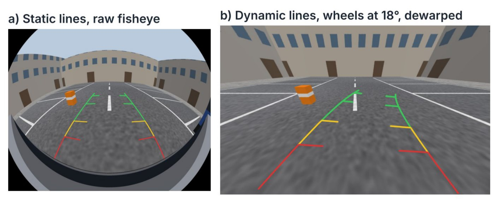
A distance marker says "this line on the road is 1 m behind the bumper". An object that sticks out above the ground — a towbar of another car, a bike rack, a loading ramp — can be closer to your bumper than the marker it appears to stand on. Calibration errors make it worse: with the rear camera at 0.95 m height, a 0.5° pitch error moves the 2 m marker by about 5 cm.
7.4The top view (bird's-eye view)
The top view shows the vehicle and its surroundings as if seen from directly above. It uses the flat-ground surface: each output pixel is a ground position \((X, Y, 0)\) in vehicle coordinates, projected into the cameras — the inverse perspective mapping of Section 2.5, applied through the fisheye models. Figure 23 compares it with ground truth.
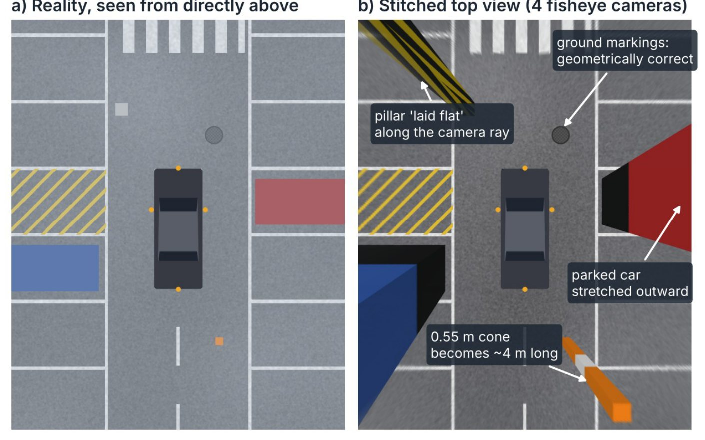
Why tall objects are smeared
The camera sees the top of an object along a ray that, extended, hits the ground much further away. Because the top view assumes every pixel is on the ground, it paints the object's top at that far ground point (Figure 24, left). An object of height \(H\) at distance \(d\) from a camera at height \(h\) is stretched to reach \(d\,h/(h - H)\); if the object is taller than the camera, the smear extends to the edge of the view. This is why the pillar in Figure 23 seems to lie on the ground and the 0.55 m cone becomes a bar about four metres long.
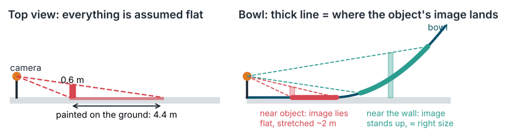
Seams and blending
Every ground point near the car is seen by one or two cameras (Figure 25). The view is divided into zones, usually separated by seam lines running diagonally outward from the vehicle corners. Along the seams the two cameras' contributions are blended: a hard seam switches abruptly, a feathered seam cross-fades over a band of some tens of centimetres, and multi-band blending fades low frequencies over a wide band and fine detail over a narrow one. More advanced systems use dynamic seams that move away from detected obstacles, so that an object is shown from one camera rather than cut in two.
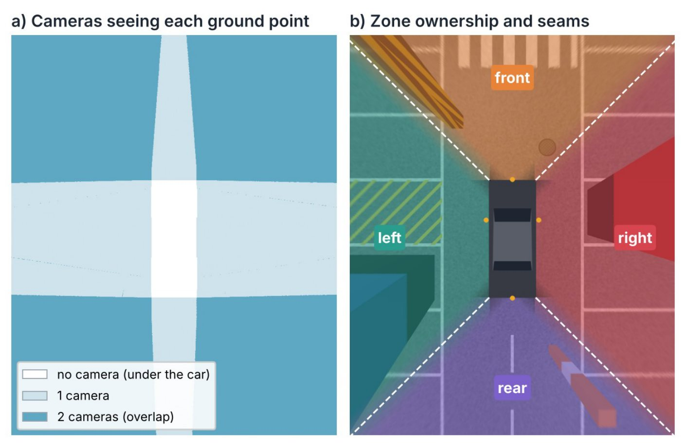
Seams have a geometric weakness that is easy to miss: in an overlap, the same tall object is smeared in a different direction by each camera, because the cameras look at it from different positions. At a seam, part of the object may be shown from neither camera's smear — thin poles can partially disappear — or from both, producing a double image. Only ground-level content is guaranteed to match across a seam, and only if the calibration is right (Figure 17).
Photometric harmonisation — the ISP part of stitching
Four cameras looking in four directions see very different lighting: one into the sun, one into a shadow. If each runs its own auto-exposure and white balance, the top view becomes a patchwork (Figure 26, left). Two complementary remedies exist. The ISP can coordinate the cameras — shared or linked AE/AWB, exposure targets computed on the ground region rather than the sky. And the stitching stage can measure the brightness and colour of the same ground in the overlap regions and solve for per-camera gains that make them agree, which is what panel b does: a small least-squares problem with one gain per camera and colour channel, regularised towards 1.
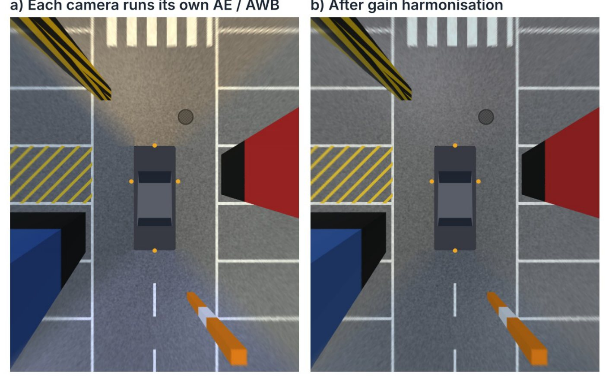
Other top-view design choices
- Range and resolution. A typical top view covers a few metres around the car at 1–2 cm per output pixel. Further out, the fisheye provides fewer pixels per metre of ground than the display asks for, and the view becomes blurry.
- The area under the car is never seen. It is covered with a vehicle graphic, or — in "transparent underbody" features — filled with ground texture captured a moment earlier and shifted using odometry.
- Vehicle mask. Parts of the vehicle visible in each camera must not be painted onto the ground.
7.5The 3D bowl view
The bowl view replaces the flat ground with a surface shaped like a bowl around the car: a flat floor where the road really is, curving up into walls further out. Distant objects — buildings, parked cars, people several metres away — are approximately "projected onto the wall" at a similar distance and therefore appear upright, as the driver expects. The bowl is rendered by the GPU as a triangle mesh (Figure 28), typically with tens of thousands of vertices. For each vertex, the texture coordinates in the relevant camera(s) are precomputed by projecting the vertex through the calibration; the GPU then renders the mesh from any virtual camera position, so the driver can orbit around the car smoothly, while a 3D model of the vehicle is drawn in the centre.
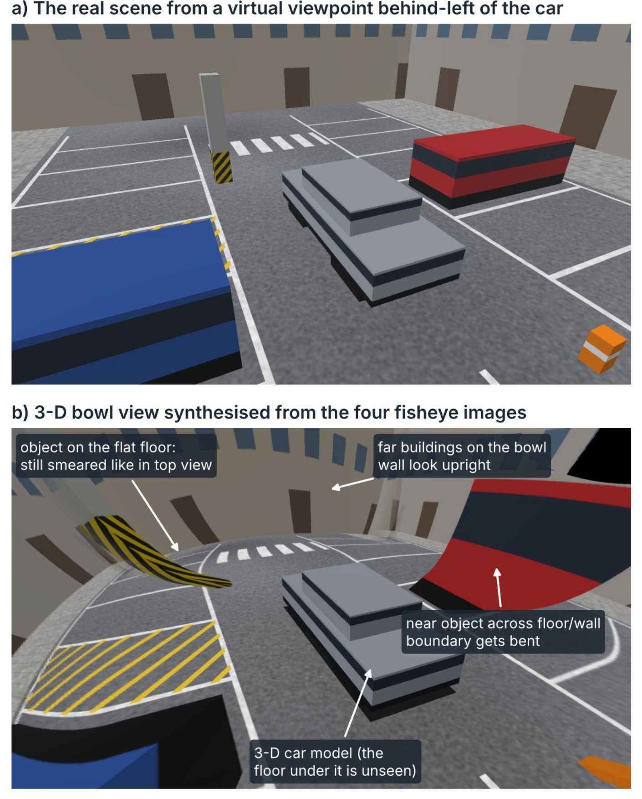
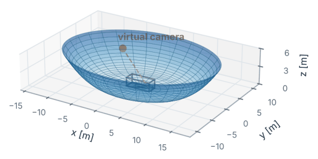
The bowl's shape is a compromise. A large flat floor keeps nearby ground correct but flattens objects standing on it; an early, steep wall makes nearby objects look upright but bends the road markings near the car. Production systems tune the floor radius, wall curvature and virtual-camera positions carefully, and some use an adaptive bowl that moves the wall to the distance of the nearest obstacles measured by ultrasonic sensors, radar or camera depth estimation, so that objects at that distance are rendered with the right proportions.
"The top view assumes the world is flat; the 3D view assumes it is a bowl. Both are approximations that are exactly right for the road and approximately right for distant objects. Things that stand close to the car are where the approximation shows — that's why the next generation of systems uses measured distances to shape the view."
7.6Summary of the views
| View | Correct | Distorted | Main calibration sensitivity |
|---|---|---|---|
| Raw fisheye | everything (it is the data) | shape and apparent distance at the periphery | none for display; masks |
| Dewarped single view | all objects at all distances within its FOV | edge stretching (rectilinear) or bent horizontal lines (cylindrical) | intrinsics; overlay position needs extrinsics |
| Guidelines | ground positions | meaning for raised objects | extrinsics (pitch → distance markers) |
| Top view | ground markings | all raised objects; seams | extrinsics of all four cameras (seam steps) |
| 3D bowl | near ground, far objects | objects between floor and wall | extrinsics; bowl shape parameters |
8Geometry in perception
Perception algorithms — detectors, segmenters, slot finders, BEV networks — are often treated as pure machine learning. Yet the moment their output has to be expressed in metres around the vehicle, they depend on exactly the same models and calibration as the views. This chapter connects the two worlds.
8.1Raw fisheye or dewarped input?
A network can look at the camera in three ways, each with a geometric price:
- Rectilinear dewarp. Familiar for networks pre-trained on normal images, but limited to ~120° and resampled, so either field of view or resolution is lost at the edges.
- Cylindrical or other "partially dewarped" projections. Keep 180°+ and make vertical structures (pedestrians, poles) vertical everywhere — a good compromise for object detection.
- Raw fisheye. No resampling loss and full field of view, but the same object looks different depending on where it appears: squeezed and tilted at the periphery, larger and upright in the centre. Networks must be trained on fisheye data covering all image regions; axis-aligned bounding boxes fit curved objects poorly, so oriented boxes, polygons or segmentation masks are often preferred. Public fisheye data sets such as WoodScape exist for this reason.
Whichever input is chosen, the training data, the inference input and the geometric post-processing must all use the same camera model and conventions. Converting a rectilinear data set into synthetic fisheye images — as this guide does with its renderer — is possible, but only useful if the synthetic lens matches the real one.
8.2From a detection to a position in metres
A detector outputs pixels. To know where a pedestrian or a kerb is, the system typically takes the point where the object touches the ground (the bottom-centre of a box, or the lower edge of a segmentation mask), converts it into a ray with \(\pi^{-1}\), rotates it into vehicle coordinates with the extrinsics, and intersects it with the ground plane:
This is the same flat-ground mathematics as the top view, with the same sensitivities: the distance error grows with the square of the distance for a pitch error (Section 6.1), and a sloped driveway or a kerb violates the \(z = 0\) assumption directly. A few pixels of error in the detected contact point matter as much as calibration: at 6 pixels per degree, one pixel is 0.17° — comparable to a good extrinsic calibration.
8.3Parking slots: why the top view is a natural input
Parking-slot markings are flat by definition, so the top view shows them with their true geometry: parallel lines, right angles, standard widths (typically 2.3–2.6 m in Europe), regardless of which camera saw them. Many slot-detection approaches therefore run directly on top-view images — detecting marking corners or line segments and assembling slots — and obtain slot coordinates in metres without further projection. Two geometric caveats follow from earlier chapters: calibration steps at the seams break line continuity and can confuse line-based detectors, and parked cars next to a free slot are smeared into it in the top view, which is why slot occupancy is usually confirmed with ultrasonic sensors or a 3D cue.
8.4Bird's-eye-view (BEV) networks
Modern multi-camera perception often builds a learned BEV representation: image features from all cameras are "lifted" into a common top-down grid around the vehicle, and detection, segmentation and free space are predicted in that grid. The lifting uses the intrinsics and extrinsics — each image feature is spread along its viewing ray or each BEV cell is projected into the cameras — so the network's geometry is only as good as its calibration. Practical consequences:
- With fisheye cameras, the lifting must use the fisheye model (rays), not a pinhole approximation.
- Training with randomly perturbed calibrations makes networks tolerant of realistic errors; feeding the calibration as an input lets one network serve several vehicle variants with different camera positions.
- Misalignment between cameras shows up as duplicated or smeared objects in the BEV grid — the learned analogue of a seam step.
8.5Beyond cameras: the other calibrations
Camera geometry rarely stands alone. Fusing camera detections with ultrasonic sensors or radar needs those sensors' positions in the same vehicle frame; online calibration and transparent-underbody views need accurate wheel odometry (wheel circumference, steering ratio); and every fusion step needs time calibration — knowing when each image was exposed relative to the odometry and the other sensors. At 10 km/h the car moves 2.8 cm per 10 ms, so a 50 ms timestamp error is a 14 cm position error: as large as a poor extrinsic calibration.
"Neural networks tell us what is in the image; calibration tells us where it is. A perfect detector with a 1° calibration error still puts the kerb half a metre off at five metres."
9Embedded implementation
On the vehicle, all of the geometry from the previous chapters must run for four or more cameras, at full frame rate, within a tight latency and power budget, on an automotive SoC — and it must fail safely. The key idea is to move almost all geometric computation out of the per-frame loop.
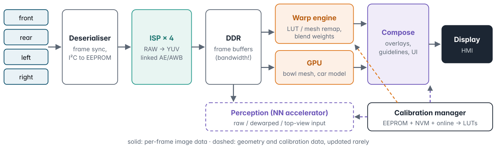
9.1LUTs and meshes
For a fixed view and calibration, the source coordinate of every output pixel never changes. Storing it per pixel is the simplest implementation, but expensive: a 800 × 1000 top view with two source positions per pixel in the overlaps, stored as fixed-point coordinates, plus blend weights, is several megabytes per view. Hardware warp engines therefore use a sparse mesh: source coordinates are stored only at grid nodes, for example every 16 output pixels, and interpolated bilinearly in between (Figure 30). This reduces the table by two orders of magnitude.
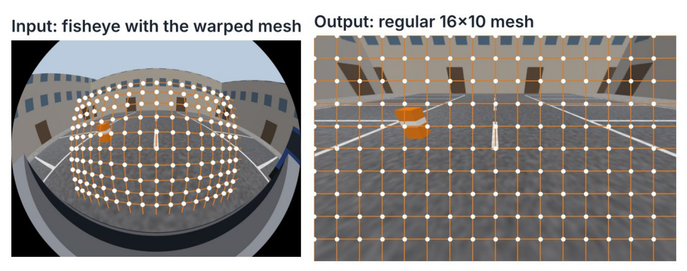
The mesh spacing is a trade-off between memory and accuracy: between nodes the true warp is curved, the interpolation straight. The error grows with the curvature of the mapping, so it is largest at the periphery of the fisheye and for views with strong compression. It is good practice to compute the maximum interpolation error of the chosen mesh against the exact model and to include it in the error budget — a coarse mesh can quietly add a pixel of error that no calibration will fix. Coordinates are stored in fixed point with a few fractional bits (sub-pixel precision of 1/16 px or finer is common), which must also be part of that check.
9.2Where the warp runs
| Engine | Strengths | Limits |
|---|---|---|
| Dedicated warp /dewarp hardware (lens-distortion-correction or geometric-distortion-correction blocks in automotive SoCs) | Very low power, deterministic timing, works tile by tile on the output, often directly on the ISP output | Fixed mesh formats and sizes, limited blending features, vendor-specific tooling |
| GPU (OpenGL ES, Vulkan) | Natural fit for the 3D bowl and animated virtual cameras; free filtering (mipmaps); flexible blending and overlays | Power, memory bandwidth, timing less deterministic; safety argumentation harder |
| DSP / vector cores | Flexible, good for custom blending and photometric correction | Random memory access to the fisheye image needs careful tiling |
| CPU (NEON) | Prototyping, LUT generation, fallback | Too slow for multi-camera full-rate warping on most platforms |
A common split is: hardware warp for single-camera views and the top view, GPU for the bowl view, CPU for generating the LUTs and meshes whenever calibration or view configuration changes.
9.3Memory bandwidth and image quality
Four 1.2 MP cameras at 30 fps in an 8-bit YUV 4:2:0 format already write about 220 MB/s into memory; the warp stage reads them back, often with poor locality because the fisheye-to-output mapping jumps around. Warp engines therefore process the output in tiles and pre-fetch the bounding box of the corresponding input region — which is why the mesh also determines bandwidth: a tile whose source region is large (strong compression) costs more. With higher-resolution cameras and more views, bandwidth, not arithmetic, is usually the bottleneck.
Resampling quality matters in two directions. Where the view magnifies the fisheye (the periphery dewarped into a rectilinear view), bilinear interpolation gives soft, slightly blocky results and bicubic helps. Where the view minifies — distant ground in a top view, wide-angle overview images — sampling a few source pixels per output pixel causes aliasing: fine textures shimmer and moiré appears as the car moves. Pre-filtering, mipmapping (on GPUs) or area-averaging LUTs prevent it.
9.4Time: synchronisation, latency, boot
- Frame synchronisation. The cameras should expose at the same moment, usually triggered by a common frame-sync signal through the serialiser links. Otherwise moving objects — and the whole scene when the car moves — tear at the seams. Rolling-shutter sensors add a row-dependent delay within each image.
- Latency. The time from exposure to display must be short enough that the image matches what the driver feels while manoeuvring; designs typically aim for end-to-end latencies on the order of 100 ms or less. Every buffered frame in the chain adds 33 ms at 30 fps.
- Fast boot. Regulations such as FMVSS 111 require the rear image within 2.0 s of selecting reverse. Calibration data must therefore be available immediately: precomputed LUTs are often stored, not regenerated at boot.
- LUT updates. When online calibration changes the extrinsics, new LUTs are generated in the background and swapped in at a frame boundary; changes are smoothed so that the view does not visibly jump.
9.5The ISP's checklist for geometric pipelines
| ISP topic | Geometric consequence |
|---|---|
| Crop, scaling, binning, flip/mirror | Changes the intrinsics; the geometry pipeline must know the exact transform (Section 2.3). |
| Lens shading correction | Must be centred on the optical centre and limited to the image circle; edge gain increases noise in exactly the regions used for the outer top view. |
| Lateral chromatic aberration | Colour fringes on lines; either corrected in the ISP or by per-channel warps. |
| Multi-camera AE / AWB | Photometric seams in stitched views; statistics regions should cover the ground near the car, not sky or the vehicle body. |
| HDR merging, LED flicker mitigation | Motion artefacts differ between cameras and appear at seams; flickering lights look different per camera. |
| Exposure metadata | Useful as input to photometric harmonisation and to online calibration's quality gating. |
| Output format (YUV 4:2:0 / 4:2:2) | Chroma planes have half resolution; the warp must scale coordinates accordingly. |
9.6Integrity and functional safety
A camera view that is wrong but looks plausible is more dangerous than a black screen. Typical measures, derived from the OEM's hazard analysis under ISO 26262 (faults) and ISO 21448 / SOTIF (performance limitations), include:
- Calibration data integrity: CRC and version checks on EEPROM and NVM data, plausibility windows around nominal values, defined fallback behaviour and diagnostic trouble codes when data is missing or implausible.
- Live-image monitoring: frame counters or checksums through the pipeline to detect frozen or repeated frames, and detection of blocked or dirty lenses.
- Overlay correctness: guidelines and distance markers computed from validated calibration and vehicle signals, with the overlay removed or flagged if inputs are invalid.
- Known limitations made explicit: smearing of raised objects, disappearing objects at seams and non-flat ground are SOTIF topics; they are addressed by HMI design (warnings, ultrasonic distance indications) and documented in the owner's manual.
"Geometry is computed once, not every frame. Calibration is turned into lookup tables, and the hardware just moves pixels according to those tables. That's why we can render several views from four cameras at full frame rate at low power — and why every calibration update is a controlled, checked event."
10Validation, KPIs and troubleshooting
Calibration quality is easy to claim and surprisingly hard to prove. This chapter lists the metrics that tell the truth, the test methods that produce them, and a symptom table for the moment something looks wrong.
10.1KPIs that matter
| KPI | Definition | Why it is meaningful |
|---|---|---|
| Intrinsic model error vs. field angle | Reprojection residuals on independent validation images, reported per ring of field angle (centre … edge of image circle) | Catches the coverage problem of Figure 14, which a single RMS hides |
| Extrinsic angle accuracy | Difference between EOL result and a reference measurement, in degrees, per axis and per camera | Directly convertible into metres with the sensitivity curves |
| Seam misalignment | Offset of the same ground feature as seen by two cameras, in cm, at defined distances | What a driver actually sees in the top view |
| Ground position accuracy | Error of reconstructed ground points (guideline markers, slot corners) against surveyed truth, in cm at 1, 3, 5 m | What functions such as automated parking actually use |
| EOL first-pass yield and cycle time | Share of vehicles calibrated successfully at the first attempt; seconds per vehicle | Plant cost; low yield usually indicates station or process problems, not cameras |
| Online calibration convergence | Driving time/distance to converge, final accuracy, false-adaptation rate across road types and loads | Robustness in the field |
| Temporal behaviour | Boot-to-image time, end-to-end latency, frame drops, camera sync offset | Regulatory and usability requirements |
10.2How to test
- Reference measurements. Surveyed target fields or ground grids (total station, laser tracker) around a vehicle on a flat floor give ground truth for extrinsics and for top-view accuracy.
- Repeatability. Calibrate the same vehicle several times, with re-positioning in between. The spread is the station's real accuracy, independent of any reference.
- Cross-checks between cameras. In the overlaps, two independently calibrated cameras must agree on ground features. This is a free, always-available consistency test — also usable in the field as a calibration monitor.
- Simulation. Synthetic scenes with known ground truth, as used throughout this guide, let you test LUT generation, seam logic, online calibration and perception geometry with exact references and controlled errors — before hardware exists, and in hardware-in-the-loop test benches afterwards.
- Corner cases. Loaded vehicle, low tyre pressure, folded and re-unfolded mirrors, tailgate opened and closed, extreme temperatures, slopes and kerbs, low sun, rain on the lens.
10.3Symptom → likely cause
| What you see | Most likely cause |
|---|---|
| Lines break at one or two seams, consistently in every scene | Extrinsic error of the camera shared by those seams |
| Seams fine near the car, steps growing with distance | Pitch (or height) error; load state differs from calibration state |
| Parallel lines in the top view converge or diverge | Pitch error of the camera covering that area (Figure 19) |
| Top view looks rotated by a small angle for one camera | Yaw error, or principal point error compensated during EOL |
| Straight lines in a dewarped view are slightly bent, worse at the edges | Intrinsic error or model mismatch (wrong model type, \(\theta\) in degrees vs radians, polynomial convention) |
| Whole image consistently shifted by a few pixels | Principal point convention (0 vs 0.5 px origin) or an unpropagated ISP crop offset |
| View mirrored or upside down, calibration "almost works" | Sensor readout flip/mirror setting not matching the calibration data |
| Good in the plant, wrong at the customer | Load and ride height, mirror fold repeatability, bumper damage, replaced part without recalibration |
| Errors change with temperature or after warm-up | Lens thermal drift; mechanical bracket movement |
| Seams visible as brightness or colour steps only | Photometric, not geometric: AE/AWB coordination or harmonisation |
| Moving objects tear or double at seams, static scene fine | Camera exposure not synchronised; timestamp mismatch |
| Fine ground texture shimmers while driving | Aliasing: the view minifies without pre-filtering |
| Thin pole partly disappears at a seam | Expected flat-ground geometry; mitigate with dynamic seams or sensor-based warnings |
- Look at the raw image: lines through the principal point should be straight.
- Dewarp to a rectilinear view: straight building edges and lane lines should be straight across the whole view.
- Project a few known ground points (e.g. corners of a floor mat at measured positions) into the image and compare.
- Look at the top view on a parking lot: lines parallel, continuous across seams, slot widths correct.
- Load the vehicle or open/close mirrors and repeat step 4.
11Cheat sheet
11.1Talking points for presentations and customer meetings
| Question | Answer in two sentences |
|---|---|
| Why do the camera images look so curved? | The fisheye lens squeezes about 190 degrees into one image, which straight-line (pinhole) lenses cannot do. The curvature is precisely known from calibration and removed in software for every view. |
| What is calibration? | Measuring how each camera sees (intrinsics) and where it is mounted on this specific car (extrinsics). Every view and every distance measurement is computed from these numbers. |
| Why calibrate every car? | Mounting tolerances add up to a degree or more, and one degree means about half a metre of error at five metres. Calibration in the plant takes under a minute per vehicle. |
| What happens when the car is loaded? | The body tilts relative to the road, which changes the cameras' angles to the ground. Online calibration detects and corrects this while driving, within safe limits. |
| Why does the parked car look stretched in the top view? | The top view assumes everything lies on the road. Road markings are therefore exact, but anything standing up is drawn as if it were painted on the ground. |
| How is the 3D view different? | It projects the images onto a bowl instead of a flat floor, so distant objects stand up. Objects close to the car remain a compromise unless the bowl adapts to measured distances. |
| Why do objects sometimes vanish at the corners of the top view? | At a seam, two cameras see a tall object from different positions and smear it in different directions. Dynamic seams and ultrasonic warnings cover this known limitation. |
| How accurate is it? | On the ground near the car, a few centimetres when well calibrated. Error grows with distance — roughly with its square for pitch errors — so the useful metric range of surround view is a few metres. |
| What does the ISP contribute? | Good, consistent images from four cameras in very different light — matched exposure and colour, corrected vignetting and colour fringes. Any crop or scale it applies must be known to the geometry pipeline. |
| Why does it run in real time on a small chip? | All geometry is precomputed into lookup tables; the hardware only moves pixels according to those tables every frame. |
11.2Formula card
| Concept | Formula |
|---|---|
| Rigid transform | \(\mathbf{X}_c = R(\mathbf{X}_v - \mathbf{C}) = R\mathbf{X}_v + \mathbf{t},\ \ \mathbf{t} = -R\mathbf{C}\) |
| Pinhole projection | \(u = f_x X/Z + c_x,\ \ v = f_y Y/Z + c_y;\ \ \lambda(u, v, 1)^{\top} = K[R \mid \mathbf{t}](X, Y, Z, 1)^{\top}\) |
| Focal length in pixels | \(f = F/p\) (focal length / pixel pitch), e.g. 1.0 mm / 3 µm ≈ 333 px |
| Ground homography | \(H = K[\mathbf{r}_1\ \mathbf{r}_2\ \mathbf{t}]\), 8 DoF, ≥ 4 point pairs; IPM uses \(H^{-1}\) |
| Vanishing point / horizon | \(\mathbf{v} \sim KR\mathbf{d};\ \ \mathbf{l}_{\infty} \sim K^{-\top}R\mathbf{n}\) |
| Flat-ground distance | \(d = h/\tan\alpha;\ \ \Delta d \approx \dfrac{d^2 + h^2}{h}\,\Delta\beta\) |
| Brown–Conrady radial | \(x_d = x_n(1 + k_1 r^2 + k_2 r^4 + k_3 r^6)\) + tangential \(p_1, p_2\) |
| Fisheye projections | equidistant \(r = f\theta\); equisolid \(2f\sin\frac{\theta}{2}\); stereographic \(2f\tan\frac{\theta}{2}\) |
| Kannala–Brandt | \(\theta_d = \theta(1 + k_1\theta^2 + k_2\theta^4 + k_3\theta^6 + k_4\theta^8),\ \ r = f\,\theta_d\) |
| Unified camera model | \(x = X/(\xi\lVert\mathbf{X}\rVert + Z)\) |
| Reprojection error | \(E = \sum_{ij} \lVert \mathbf{u}_{ij} - \pi(\mathbf{k}; R_i\mathbf{X}_j + \mathbf{t}_i) \rVert^2\) |
| Intrinsics after ISP crop + scale | \(c' = (c - x_0)\,s,\ \ f' = f\,s\) |
| Top-view smear of an object | height \(H\) at distance \(d\), camera height \(h\): painted out to \(d\,h/(h - H)\) |
| Dynamic guideline radius | \(R = L/\tan\delta\) (wheelbase \(L\), road-wheel angle \(\delta\)) |
QSelf-check questions
Short model answers first, then questions that check understanding with why and what if.
Q.1Core questions
Why is a camera called an angle-measuring instrument, and how do you get metres from it?Basic
Each pixel only says from which direction light arrived; every point along that ray gives the same pixel, so one image has no depth. Metres need one more piece of information: an assumed surface (flat ground, the basis of top views and guidelines), motion (triangulation with odometry), a second camera (stereo or overlaps), or learned depth, which still needs correct intrinsics to turn depth into 3D points.
What are intrinsics and extrinsics, and who calibrates which?Basic
Intrinsics describe how the camera maps a direction relative to itself to a pixel: focal length, principal point and the lens model's distortion parameters. They are fixed by the lens and its alignment to the sensor and are usually measured per unit at the camera supplier and stored in EEPROM. Extrinsics are the camera's six-degree-of-freedom pose on this particular car; they depend on brackets, bumper and body tolerances and are calibrated at the vehicle end of line, after repairs, and corrected online while driving.
Describe the chain from a point in the vehicle frame to a pixel.Basic
A rigid transform moves the point into the camera frame (extrinsics); projection gives normalised coordinates; the lens model applies distortion; K converts to pixels (the last three are intrinsics). The frames use different conventions: the vehicle frame (ISO 8855) is x forward, y left, z up, while the OpenCV camera frame is x right, y down, z along the viewing direction, and pixel v grows downwards. Half of all integration bugs are a mismatch in one of these conventions.
In Xc = R Xv + t, why is t not the camera's position?Intermediate
Because the rotation is applied first: Xc = R(Xv − C), so t = −R C. t is the vehicle origin expressed in camera coordinates. The camera's position in the vehicle frame is C = −Rᵀt. Exchanging extrinsics between teams therefore needs a stated direction (vehicle-to-camera or camera-to-vehicle), an Euler order, the sign of pitch and units, ideally with a numerical test vector.
What is a homography and why is a top view just an image warp?Intermediate
For points on the ground (Zv = 0) the third rotation column drops out and projection becomes a 3 × 3 matrix H = K[r₁ r₂ t] between the road plane and the (undistorted) image. It has 8 degrees of freedom, keeps straight lines straight but not parallels or lengths, and four or more point pairs determine it. A top view applies the inverse mapping to every output pixel, which is a fixed 2D warp precomputed into a table, not a 3D reconstruction.
What do vanishing points and the horizon tell you about a camera?Intermediate
Parallel 3D lines with direction d meet at the vanishing point v ∼ K R d, which depends only on the rotation, not on the position. All directions parallel to the ground produce vanishing points on one line, the horizon. Driving straight along lane markings, their vanishing point gives the camera's pitch and yaw relative to the driving direction, which is one of the cues online calibration uses.
How does a pitch error turn into a ground-distance error?Intermediate
On flat ground d = h / tan α, so Δd ≈ (d² + h²)/h · Δβ with Δβ in radians: the error grows with the square of the distance. For a camera 1 m high, 1° of pitch error costs about 0.18 m at 3 m and 0.5 m at 5 m. Yaw errors grow only linearly (about 4 cm sideways at 5 m for 0.5°). That is why the useful metric range of surround view is a few metres.
Why does Brown–Conrady fail for a 190° fisheye, and what replaces it?Intermediate
Brown–Conrady corrects the pinhole radius tan θ, which goes to infinity at 90°; no polynomial on top of it can describe rays at or beyond the side of the camera. Fisheye models describe the radius as a function of the angle: Kannala–Brandt (OpenCV fisheye) uses θd = θ(1 + k₁θ² + … + k₄θ⁸) and is exactly equidistant with all k = 0. Even then, OpenCV's fisheye functions compute θ from X/Z, so rays at 90° and beyond must be handled with atan2 on the full ray.
Compare the common fisheye camera models.Advanced
Kannala–Brandt: four coefficients, very accurate, forward projection closed-form but pixel-to-ray needs Newton iterations. Scaramuzza (OCamCalib): describes the ray for a pixel, so unprojection is closed-form and projection iterative. Unified camera model and its extensions (EUCM, double sphere): project onto a unit sphere and then through a shifted pinhole; few parameters and closed-form inverses, popular in SLAM. Polynomial r(θ) tables come from lens data or datasets. The choice is often dictated by the supplier's EEPROM format; converting means sampling one model and fitting the other across the whole field.
How can an intrinsic calibration with a low RMS still be wrong?Intermediate
RMS only measures how well the model fits the points it was given. In the simulation of Section 5.4, boards everywhere and boards only in the centre both gave 0.21 px RMS, but the centre-only calibration was wrong by up to 1.84 px at the edge of the image circle, exactly where top views and bowl walls take their data. Acceptance must include coverage per field-angle ring, maximum residual, parameter uncertainty and repeatability.
Which calibration parameters hide behind each other?Advanced
Focal length and the first distortion coefficient both scale the image radius; only data at large angles separates them. Focal length and target distance are separated only by tilted views. Principal point and camera rotation: shifting cx by a few pixels looks almost like a small yaw, so an intrinsic principal-point error is silently absorbed into the extrinsic yaw at the vehicle plant and reappears when the camera is replaced.
How does extrinsic calibration at the vehicle end of line work?Intermediate
The car is positioned in a station with surveyed floor targets, in a defined state (doors closed, mirrors unfolded, defined load). A diagnostic routine is started over UDS; each camera detects the targets, converts pixels to rays with its own intrinsics, and solves PnP refined by reprojection error, optionally jointly for all cameras. The result is checked against the nominal pose window and stored in non-volatile memory with a "calibrated" status. In practice the dominant error is how well the car's pose in the station is known, not detection noise.
Why is online calibration needed, and what makes it safe?Advanced
The EOL result describes the car in one state; load, ride height, tyre pressure, mirror folding and ageing change the cameras' angles to the road by fractions of a degree. Online methods use ground-feature motion against odometry, vanishing points of lane markings and consistency in camera overlaps. Safety comes from gating (estimate only on suitable roads and speeds), bounded corrections around the EOL values, agreement of independent cues, slow filtering and always reporting calibration status, because a wrong convergence is worse than none.
What is the single recipe behind every synthetic view?Basic
For each output pixel: compute the ray of the virtual camera, intersect it with an assumed world surface, project the 3D point into each real camera that sees it, sample and blend. The first three steps depend only on geometry, so for a fixed calibration and view they are computed once into a lookup table or mesh, and the hardware only moves pixels every frame. The view type is defined by the surface: none for a single-camera dewarp, a plane for the top view, a bowl for the 3D view.
Why are tall objects smeared in a top view, and by how much?Intermediate
The top view assumes every pixel is on the ground, so the top of an object is painted where its viewing ray would hit the ground, further from the camera. A point at height H seen from a camera at height h at ground distance d is painted at d·h/(h − H): the top of a 0.6 m object 2.5 m from a 1 m high camera lands at 6.25 m. Road markings are exact; anything standing up is stretched radially away from each camera.
How do you make the four cameras look like one image at the seams?Intermediate
Geometrically, with accurate extrinsics so ground features continue across seams, and with feathered blending in the overlaps. Photometrically, by coordinating auto-exposure and white balance (statistics on the ground near the car, not sky or body) and by estimating per-camera, per-channel gains from the overlap areas so neighbouring zones match. Brightness steps at a seam are a photometric problem, not a calibration one.
How do intrinsics change when the ISP crops and scales?Intermediate
K belongs to a specific pixel grid. Cropping a window starting at (x₀, y₀) and scaling by s gives c′ = (c − x₀)s and f′ = f s; distortion coefficients defined on normalised coordinates stay the same. A flip or mirror changes the signs. If the geometry pipeline is not told about an ISP crop, the whole image appears shifted by a few pixels.
How does a detection in the image become a position in metres?Intermediate
Take the point where the object touches the ground (bottom centre of a box or lower edge of a mask), unproject it to a ray with the fisheye model, rotate the ray into the vehicle frame and intersect it with the ground plane: S = C + s dv with s = −Cz/dv,z. It inherits the flat-ground sensitivities: pitch errors grow with distance squared, and kerbs or driveways violate the plane assumption.
Where does the warp run on an automotive SoC?Intermediate
Dedicated dewarp hardware (LDC or GDC blocks) handles single-camera views and the top view with low power and deterministic timing from a sparse mesh. The GPU renders the 3D bowl and animated virtual cameras with flexible blending and overlays, at higher power and with a harder safety argument. DSPs do custom blending and photometric correction, and the CPU generates LUTs and meshes whenever calibration or view configuration changes.
What do rear-view regulations require from the camera system?Basic
In the US, FMVSS 111 requires a rear image showing defined test objects up to 6.1 m behind the bumper within 2.0 s after reverse is selected. UN Regulation No. 158 covers reversing detection, with camera systems showing the area roughly 0.3 to 3.5 m behind the vehicle. The 2 s limit is why calibration LUTs are stored rather than regenerated at boot.
Q.2Why and what if
What if the stored pitch of the rear camera is 2° wrong?What if
Parallel aisle lines in the top view converge or diverge instead of staying parallel, slot widths and distances change, and the error grows with the square of the distance. Guideline distance markers move too. The symptom points to pitch of the camera covering that area, or to a load state different from the calibration state.
What if lines break at the same seams in every scene?What if
A consistent step at one or two seams points to an extrinsic error of the camera those seams share. If the seams are fine near the car and the step grows with distance, it is pitch or height; if the camera's whole zone looks rotated, it is yaw, or a principal-point error that was absorbed into yaw at EOL.
Why can objects vanish at the corners of the top view?Why
In an overlap the same tall object is smeared in a different direction by each camera, because they look at it from different positions. At the seam one camera's smear points to one side and the other's to the other, so part of a thin pole can fall outside both zones. It is a property of flat-ground geometry; dynamic seams and ultrasonic warnings mitigate it.
What if the sensor readout is mirrored but the calibration assumes it is not?What if
The view appears mirrored or upside down and calibration "almost works": the geometry is self-consistent but every u coordinate is reflected about the image width. The readout flip and mirror settings are part of the intrinsic data contract and must be fixed before calibration.
What if θ is in degrees where the code expects radians?What if
The model is evaluated with wildly wrong angles; the polynomial terms then dominate, straight lines in a dewarp bend more towards the edges, and nothing obviously crashes. Unit, polynomial convention and model type belong in the interface specification together with a test vector ("this ray gives this pixel").
Why does a single-camera dewarp need no 3D assumption while a top view does?Why
A virtual camera placed at the real camera's projection centre only rearranges the same bundle of rays, so every object at every distance lands correctly; only resolution and field of view are traded. A top view or bowl view looks from a different viewpoint, so it needs to know where along each ray the surface is, and the assumed surface is right only for things that actually lie on it.
What if a network trained on rectilinear images runs on raw fisheye frames?What if
Objects at the periphery are squeezed and tilted and look unlike anything in the training data, so recall drops at the edges, where side traffic and pedestrians appear. Either train on fisheye data covering all image regions (or synthetic fisheye conversions using the real camera model), or feed a cylindrical projection that keeps verticals vertical.
Why does doubling the megapixels give only about 1.4 times more pixels per degree?Why
Pixels are spread over two dimensions; doubling the count over the same field multiplies each dimension by √2. For a fisheye, which spreads pixels roughly evenly over angles, the angular resolution therefore grows only by 1.41. Detection range requirements should be stated in pixels per degree at the relevant field angle.
What if the four cameras are not exposure-synchronised?What if
The static scene stitches fine, but moving objects, and the whole scene while the car moves, tear or double at seams because each camera captured a different moment. Cameras are triggered from a common frame-sync through the serializer links, and timestamps are tracked per frame.
Why is a principal-point error dangerous when cameras are replaced in service?Why
At EOL the extrinsic yaw silently absorbs the principal-point error of the original camera, so the system looks perfect. A replacement camera has a different principal point, and if only the camera is swapped without recalibrating extrinsics, the old compensation now adds a visible rotation of that camera's zone. Any repair touching a camera or its mounting must be followed by recalibration.
GGlossary
- AE / AWB
- Auto-exposure / auto-white-balance, run in the ISP per camera.
- BEV
- Bird's-eye view: a top-down representation, either an image (top view) or a learned feature grid.
- Bowl view
- 3D surround view rendering the camera images onto a bowl-shaped surface around the car.
- Bundle adjustment
- Joint non-linear optimisation of camera parameters and target or scene geometry minimising reprojection error.
- Double sphere / EUCM
- Extensions of the unified camera model with closed-form projection and unprojection, popular in SLAM.
- EOL
- End of line: final production step, at the camera supplier (intrinsics) or the vehicle plant (extrinsics).
- Equidistant projection
- r = f θ: uniform pixels per degree; the reference for most automotive fisheyes ("f-θ lens").
- Extrinsics
- Pose of the camera relative to the vehicle: 3 rotations, 3 translations.
- Flat-world assumption
- Treating every pixel as lying on the road plane z = 0; exact for markings, smears anything with height.
- FMVSS 111
- US rear-visibility standard: rear image within 2.0 s of selecting reverse, test objects up to 6.1 m.
- Guidelines
- Static or steering-dependent ground curves projected into the camera image as an overlay.
- Homography
- 3 × 3 projective mapping between two planes; used for ground-plane views and target-based pose.
- Image circle
- The round area of the sensor illuminated by a fisheye lens.
- Intrinsics
- Camera-internal parameters: focal length, principal point, distortion.
- IPM
- Inverse perspective mapping: re-projecting an image onto the ground plane.
- ISO 8855
- Vehicle axis convention: x forward, y left, z up, right-handed.
- Kannala–Brandt model
- Fisheye model θd = θ(1 + k₁θ² + … + k₄θ⁸); OpenCV's fisheye module.
- LCA
- Lateral chromatic aberration: colour-dependent magnification causing colour fringes.
- LSC
- Lens shading correction: ISP gain grid compensating vignetting and colour shading.
- LUT / mesh
- Precomputed map from output pixels to source pixels; dense per pixel or sparse with interpolation.
- Online calibration
- Target-free estimation of calibration (mainly extrinsics) during normal driving.
- Photometric harmonisation
- Per-camera, per-channel gains estimated from overlaps so stitched zones match in brightness and colour.
- Pixels per degree
- Angular resolution; the right resolution measure for a fisheye camera, not megapixels.
- PnP
- Perspective-n-Point: computing a camera pose from known 3D points and their image positions.
- Principal point
- Pixel where the optical axis meets the sensor, (cx, cy).
- Reprojection error
- Pixel distance between observed and model-predicted image points.
- Seam
- Boundary between the zones of two cameras in a stitched view.
- SOTIF
- Safety of the intended functionality (ISO 21448): hazards from performance limitations without faults.
- Unified camera model (UCM)
- Projects a point onto a unit sphere and then through a pinhole shifted back by ξ; handles fields above 180°.
- UN R158
- UN regulation on devices for reversing motion, including camera systems covering about 0.3–3.5 m behind the vehicle.
- Vanishing point
- Image point where projections of parallel 3D lines meet; depends only on camera rotation.
RFurther reading
All rendered images, the calibration experiment and the EOL pose estimation in this chapter were produced with a purpose-built simulation (ray-traced scene, Kannala–Brandt fisheye model, own bundle adjustment, OpenCV PnP). Quoted regulatory facts: FMVSS 111 (rear image within 2.0 s of selecting reverse; test objects up to 6.1 m behind the bumper) and UN Regulation No. 158 (reversing detection; camera systems showing 0.3–3.5 m behind the vehicle). Industry figures such as tolerances, typical RMS values and latencies are orders of magnitude for orientation and differ between programmes.
- R. Hartley and A. Zisserman, Multiple View Geometry in Computer Vision, Cambridge University Press. Projective geometry, homographies, vanishing points and calibration.
- Z. Zhang, "A flexible new technique for camera calibration," IEEE TPAMI, 2000. Planar-target calibration as used by OpenCV.
- J. Kannala and S. S. Brandt, "A generic camera model and calibration method for conventional, wide-angle, and fish-eye lenses," IEEE TPAMI, 2006.
- D. Scaramuzza, A. Martinelli and R. Siegwart, "A toolbox for easily calibrating omnidirectional cameras," IROS 2006 (OCamCalib).
- C. Mei and P. Rives, "Single view point omnidirectional camera calibration from planar grids," ICRA 2007 (unified camera model).
- B. Khomutenko, G. Garcia and P. Martinet, "An enhanced unified camera model," IEEE RA-L, 2016; V. Usenko, N. Demmel and D. Cremers, "The double sphere camera model," 3DV 2018.
- S. Yogamani et al., "WoodScape: a multi-task, multi-camera fisheye dataset for autonomous driving," ICCV 2019. Real surround-view fisheye data and its polynomial camera model.
- OpenCV documentation: calib3d and the fisheye module (cv::fisheye), including its limits at 90° incidence.
- US FMVSS No. 111 (rear visibility) and UN Regulation No. 158 (devices for reversing motion).
- In this book: Light, lenses and the sensor plane (projection models, focus), Classic computer vision (PnP, RANSAC, bundle adjustment), Multi-sensor calibration, synchronisation and fusion, GPU programming for automotive surround view (rendering the views) and Bird's-eye view and 3D perception (learned BEV).